Audiometer: operation, signal generation and calibration
2 hours05.11.202606.11.2026Practical P8
The audiometer is the reference instrument of audiology: it generates tones, noises and speech at precisely known frequencies and levels and delivers them through calibrated transducers so that a threshold can be expressed in dB HL. Every audiogram is only as good as the instrument behind it, so an audiologist must understand how the signal is made, how its level is controlled and how the whole chain is checked and calibrated.
What it is
An electroacoustic signal generator with a precision attenuator, output routing to earphones, a bone vibrator or loudspeakers, a masking channel, a speech channel and a patient response system. Its dial reads directly in dB hearing level (dB HL) because the calibration data for each transducer are stored inside it.
Why it is required
Thresholds must be comparable between clinics, between visits and against normative data. That is possible only if a dial setting of, say, 40 dB HL at 1 kHz produces the same physical sound pressure (or vibratory force) on every audiometer that uses the same transducer. Calibration against international reference values makes this true.
How it works
A digital oscillator produces the test signal, an envelope generator switches it on and off smoothly, an attenuator sets the level in 5 dB (or finer) steps, and a power amplifier drives the selected transducer. The firmware adds the transducer-specific reference level to the HL dial so that 0 dB HL corresponds to the average normal threshold for that transducer and frequency.
Pure-tone audiometry: the tester at the audiometer and the patient in the sound booth.Image: Flávia Costa, Wikimedia Commons, CC BY 3.0
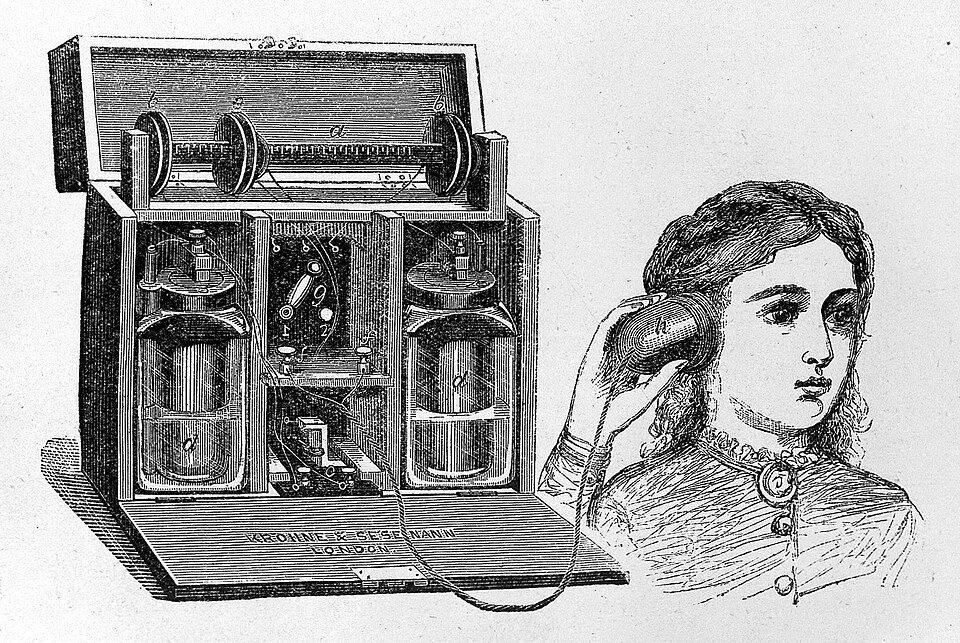
Professor Hughes' audiometer (19th century), an early instrument for measuring hearing.Image: Wellcome Collection, Wikimedia Commons, CC BY 4.0
Background and principle of operation
Hearing threshold varies strongly with frequency when it is expressed as sound pressure. A young normal-hearing listener needs far more sound pressure at 125 Hz than at 1 kHz to just detect a tone. If the audiometer dial were marked in dB SPL, a normal audiogram would be a curved line and every abnormality would have to be read against that curve. The hearing level scale solves this: for each frequency and each type of transducer a reference equivalent threshold sound pressure level (RETSPL) is defined, which is the sound pressure level, measured in a specified coupler or ear simulator, that corresponds to the median threshold of otologically normal young adults. The audiometer adds this reference value internally, so 0 dB HL is the normal threshold at every frequency and the normal audiogram is a straight line.
L_SPL(coupler) = L_HL(dial) + RETSPL(f, transducer, coupler)
where L_HL is the dial setting in dB HL, RETSPL is the reference equivalent threshold sound pressure level for that frequency f, earphone type and coupler, and L_SPL is the level the calibration microphone should read.
For bone conduction the output is a force, not a pressure. The reference is the reference equivalent threshold vibratory force level (RETVFL, often written RETFL), expressed in dB re 1 µN and measured on an artificial mastoid (a mechanical coupler that mimics the mechanical impedance of the skin and bone behind the ear). For sound field testing through loudspeakers, reference thresholds for free-field or diffuse-field listening are used and the level is measured at the listener position with the listener absent.
The key engineering requirements follow directly from this principle. The signal must have the correct frequency, it must be spectrally pure (a distorted 250 Hz tone has harmonics at 500 and 750 Hz that a listener with a steep low-frequency loss might hear instead of the fundamental), its level must change by exactly the amount the dial says, it must switch on and off without clicks, and nothing must leak out when the tone is off. A calibration programme checks each of these properties.
DefinitiondB HL is a level relative to the normal threshold for the particular transducer and frequency. dB SPL is a level relative to 20 µPa. dB nHL (used for clicks in evoked potential testing) is relative to the threshold of a small group of normal listeners measured locally or to a standardised reference for short-duration signals. The three scales are not interchangeable.
Test signals
Pure tone: a single sinusoid, conventionally at octave frequencies 125, 250, 500, 1000, 2000, 4000 and 8000 Hz with inter-octave frequencies 750, 1500, 3000 and 6000 Hz. Extended high-frequency audiometers continue up to about 16 or 20 kHz with special earphones.
Warble tone: a frequency-modulated tone whose instantaneous frequency swings around the nominal centre frequency, typically by a few percent at a modulation rate of a few hertz to about 20 Hz. It is used in sound field testing because a pure tone in a room creates standing waves: at one point the level can be several decibels higher or lower than the average. Spreading the energy across a small band averages out these room modes.
Pulsed tone: the pure tone automatically switched on and off (for example about 200 ms on, 200 ms off). Many patients, particularly those with tinnitus, find pulsed tones easier to detect.
Narrowband noise (NBN): random noise filtered to a band around the test frequency, typically between about one-third and one-half octave wide. It is the standard masker for pure-tone audiometry because it concentrates energy in the critical band around the test tone, so it masks efficiently without being needlessly loud.
Speech-shaped (speech) noise: broadband noise whose spectrum is shaped to resemble the long-term average speech spectrum, falling at higher frequencies. It is the masker for speech audiometry.
White noise: noise with equal power per hertz across the band. It is an inefficient masker (much of its energy lies outside the critical band) and is mainly retained for special tests and older procedures.
Speech: live voice through a microphone, or recorded word lists from a CD, a file or a built-in library, for speech recognition threshold and word recognition testing.
Architecture and signal flow
Figure 4.1a shows the functional blocks of a two-channel diagnostic audiometer. Modern instruments are digital: most blocks are implemented in a microcontroller or a digital signal processor followed by a high-resolution digital-to-analogue converter (DAC). The functional description is the same whether the block is a circuit or a line of firmware.
Figure 4.1a. Functional blocks of a two-channel diagnostic audiometer. Channel 1 carries the test signal, channel 2 the masking noise; the output switch routes each to the chosen transducer and ear.
Walk-through of the test channel, block by block:
Oscillator. In older analogue instruments this was a Wien-bridge or similar oscillator trimmed with potentiometers, and its frequency drifted with temperature and age. Modern audiometers use direct digital synthesis (DDS): a phase accumulator is incremented by a fixed step at every sample clock tick, the phase indexes a sine look-up table, and the resulting samples go to a DAC followed by a reconstruction (anti-imaging) low-pass filter. The frequency is set by the phase step and is as accurate as the crystal clock, typically far better than the tolerance required by the standard.
Signal selector. Chooses continuous, pulsed or warble presentation, or switches the channel to an external input (microphone, recorded speech).
Interrupter (tone switch). Turns the stimulus on and off when the tester presses the present bar. It does not switch abruptly: the amplitude follows a controlled rise and fall envelope lasting a few tens of milliseconds. An instantaneous switch spreads energy across a wide frequency range (spectral splatter) and produces an audible click, which a patient could hear at a frequency where the tone itself is inaudible. The interrupter also defines the off-state, which must be silent (the standards specify how far below the on level any residual signal must be).
Attenuator. Sets the output level. The HL dial usually moves in 5 dB steps with optional 1 or 2 dB steps, over a range from about −10 dB HL to 110 or 120 dB HL for air conduction at mid frequencies (smaller maxima at the frequency extremes and for bone conduction, limited by transducer distortion). In digital designs the attenuation is applied by multiplying samples by a gain factor, often combined with switched analogue attenuators so that low levels do not use only the least significant bits of the DAC.
Power amplifier. Provides the current and voltage the transducer needs. Earphones need a modest voltage; a bone vibrator needs considerably more drive because it is an inefficient electromechanical transducer; loudspeakers need a separate power amplifier.
Output switch and transducers. Routes the signal to the left or right earphone, the bone vibrator or the loudspeakers. Because each transducer has different reference values, the controller changes the calibration table whenever the transducer changes.
The masking channel mirrors this structure with a noise generator (a pseudo-random number generator followed by band-pass filters for NBN, or a spectral shaping filter for speech noise), its own attenuator and amplifier. Masking levels are commonly calibrated in effective masking level (dB EM): a narrowband noise at X dB EM will just mask a pure tone at X dB HL at the same frequency in a normal ear. The controller can lock the two channels together so that masking changes in step with the test level.
The patient response switch lights a lamp on the front panel or on the software screen. In computer-controlled audiometers the response timing is also logged, which allows automatic (Hughson-Westlake style or Békésy style) test procedures.
Speech circuit, talkback and monitoring
Figure 4.1b. Speech circuit with VU meter monitoring, recorded input, tester monitor and the talkback path from the patient room.
Speech is a fluctuating signal, so its level cannot be read like that of a steady tone. The VU meter (volume unit meter) is a standardised averaging meter with a defined, relatively slow ballistic response. The convention is that speech is adjusted until its peaks (for live voice, the peaks of a carrier phrase) deflect to 0 VU; for recorded material, a calibration tone recorded at the start of the list is set to 0 VU. Only when the meter reads correctly does the speech HL dial mean what it says. Speech dB HL is referenced to a speech RETSPL; in ANSI S3.6 practice this is set about 12.5 dB above the 1 kHz pure-tone RETSPL of the same earphone (roughly 20 dB SPL for common supra-aural earphones). The precise value depends on the standard and transducer, so check the standard in use.
The talkback system lets the tester hear the patient (and give instructions when the test signal is off) without opening the booth door. The monitor lets the tester hear what is being delivered to the patient, which is essential for live-voice testing and a quick check that recorded material is playing.
Audiometer types
Type (IEC 60645-1 style classification)
Typical facilities
Typical use
Type 1: advanced diagnostic / research
Two independent channels, AC, BC, NBN and speech masking, speech audiometry, sound field, extended range, special tests
Tertiary clinics, research laboratories
Type 2: diagnostic / clinical
Two channels, AC and BC with masking, speech audiometry
Routine diagnostic audiology
Type 3: simple diagnostic
AC and BC with limited masking, reduced frequency and level range
Basic clinics, ENT offices
Type 4: screening
AC only, fixed or limited levels, no masking
School and industrial screening
PC-based and portable audiometers
Signal generation in a USB or wireless interface controlled by a computer or tablet
Outreach, tele-audiology, integration with record systems
Automatic (Békésy / computer-controlled)
Patient tracks the threshold; software records it
Industrial monitoring, research
Extended high-frequency
Tones up to about 16 to 20 kHz with dedicated earphones
Ototoxicity monitoring, noise studies
The exact facilities required for each type are defined in IEC 60645-1; ANSI S3.6 uses a similar numbered scheme. The type number sets the minimum facilities and output ranges, not the accuracy: all types must meet the same basic calibration tolerances for the functions they have.
Components
Component
Function
What can go wrong
Oscillator / DDS and DAC
Generates the test waveform at the selected frequency
Wrong frequency (rare with crystal clocks), harmonic distortion from DAC or filter faults, noise floor too high
Envelope generator (interrupter)
Controls on/off and the rise/fall ramp
Audible clicks, too-slow ramps, residual signal in the off state
Attenuator
Sets the HL in defined steps
Step errors, non-linearity, crosstalk at high attenuation
Power amplifier
Drives transducers
Clipping and distortion at high levels, hum, channel crosstalk
Earphones (supra-aural, circumaural, insert)
Deliver air-conduction signal
Cracked or aged cushions, damaged diaphragm, intermittent cords, blocked or split insert tubes, wrong ear-tip size
Bone vibrator and headband
Deliver vibratory force to skull
Dropped vibrator (output change), headband tension loss, vibrotactile response at low frequencies, acoustic radiation at high frequencies
Loudspeakers and amplifier
Sound field testing
Room standing waves, changed position of speaker or chair, blown driver
Noise generator
Masking signals
Wrong bandwidth, masking level not calibrated in dB EM
Speech circuit and VU meter
Live and recorded speech
Meter not zeroed, input overload, wrong calibration tone level
Patient response switch
Registers responses
Intermittent contact, stuck switch, cable damage
Talkback and monitor
Communication and monitoring
Feedback, microphone left on during testing, poor intelligibility
Common errorEarphones are calibrated as a matched set with a particular audiometer. Swapping earphones between audiometers, or replacing a damaged earphone with an uncalibrated spare, invalidates the calibration for that channel even if the model number is identical.
Key parameters and specifications
Parameter
Typical value or requirement
Clinical meaning
Frequency range (AC)
125 to 8000 Hz (extended: to about 16 to 20 kHz)
Covers speech range and noise-sensitive 3 to 6 kHz region
Frequency accuracy
typically within about ±1 % (diagnostic) to ±2 % (simpler types)
A 1 kHz tone reads 990 to 1010 Hz at ±1 %
AC output range
about −10 to 110 or 120 dB HL at mid frequencies
Maximum is lower at 125 Hz and 8 kHz; watch the "max" indicator
BC output range
typically up to about 40 to 70 dB HL depending on frequency
Limited by vibrator distortion and vibrotactile response
Level step
5 dB standard, 1 or 2 dB optional
Clinical threshold search uses 5 dB steps
Output level tolerance
commonly about ±3 dB (125 to 4000 Hz), wider at higher frequencies
Check the standard: tolerance differs by frequency and type
Harmonic distortion
a few percent at most at specified test levels (limits vary by transducer and frequency)
Distortion products can be heard instead of the fundamental
Rise and fall time
typically a few tens of milliseconds (commonly quoted near 20 to 50 ms)
Prevents clicks and spectral splatter
Off-state residual level
must be far below the on level (well below threshold)
Patient must not hear the tone when it is off
Crosstalk between earphones
non-test earphone output far below the test ear (often specified as at least about 70 dB lower)
Otherwise false responses from the non-test ear
Warble tone
deviation a few percent of centre frequency; modulation rate a few Hz to about 20 Hz
Reduces standing waves in sound field
NBN bandwidth
roughly 1/3 to 1/2 octave, with specified skirt slopes
Efficient masking around the test frequency
Speech channel reference
0 VU with calibration tone or speech peaks
Makes the speech HL dial valid
These values are for orientation. The binding numbers are those in the edition of IEC 60645-1 (or ANSI S3.6) that your instrument claims to meet, and in the ISO 389 part that applies to your transducer.
Algorithms and equations
Direct digital synthesis
f_out = (Δφ / 2^N) × f_clk
Δφ = round(f_out × 2^N / f_clk)
where f_out is the output frequency, Δφ the phase increment added every clock tick, N the number of bits in the phase accumulator and f_clk the sample clock frequency.
Worked example: with a 32-bit accumulator and a 48 kHz sample clock, the frequency resolution is 48 000 / 232 = 1.12 × 10−5 Hz. For 1000 Hz, Δφ = 1000 × 4 294 967 296 / 48 000 = 89 478 485.3, which rounds to 89 478 485 and gives 999.999997 Hz. The error is less than four parts per billion, compared with a tolerance of about 1 part in a hundred. The clock crystal (typically accurate to tens of parts per million) dominates the real error.
Hearing level to sound pressure level
Worked example: the reference equivalent threshold SPL for a TDH-39 type supra-aural earphone at 1 kHz, measured in the NBS 9-A (6 cm3) coupler, is 7.0 dB SPL in ANSI S3.6. With the dial at 60 dB HL, the calibration microphone should read 60 + 7.0 = 67.0 dB SPL. If it reads 70.5 dB SPL, the output is 3.5 dB high. At a tolerance of about ±3 dB this channel is out of calibration at 1 kHz and must be corrected. Always use the RETSPL for the exact earphone and coupler combination; the value differs for other earphones and for the IEC 60318-1 ear simulator.
Attenuator linearity
step error = (L_meas(n) − L_meas(n−1)) − (D(n) − D(n−1))
where L_meas is the measured output level and D the dial setting for successive steps n; the cumulative error is L_meas − (L_ref + D − D_ref).
Worked example: measured coupler levels for dial settings 70, 65, 60 and 55 dB HL are 77.0, 72.2, 66.4 and 62.1 dB SPL. The step changes are 4.8, 5.8 and 4.3 dB instead of 5.0, so the step errors are −0.2, +0.8 and −0.7 dB. Linearity is checked across the whole range, usually from the maximum down to the point where the signal disappears into the measuring system noise floor (the rest of the range is then checked electrically at the transducer terminals, where the voltage is larger than the acoustic noise floor).
Total harmonic distortion
THD = √(V2² + V3² + ... + Vn²) / V1 × 100 %
where V1 is the RMS amplitude of the fundamental and V2 ... Vn the RMS amplitudes of the harmonics.
Worked example: a 500 Hz tone gives a fundamental of 1.00 V, second harmonic 0.020 V and third harmonic 0.010 V (measured at the coupler microphone output). THD = √(0.0004 + 0.0001) / 1.00 = 0.0224, that is 2.24 %. In decibels the second harmonic is 20 log10(0.02) = −34 dB relative to the fundamental.
Warble tone
f(t) = fc × (1 + d × sin(2π fm t))
where fc is the centre frequency, d the fractional deviation and fm the modulation rate.
Worked example: fc = 1000 Hz, d = 0.05 (5 %) and fm = 5 Hz. The frequency swings between 950 and 1050 Hz five times per second.
Calibration
Couplers, ear simulators and the artificial mastoid
An earphone's output depends on the acoustic load it drives. A standard coupler or ear simulator presents a defined load and holds a measurement microphone. The main devices are:
The 6 cm3 coupler (NBS 9-A type), a simple hard-walled cavity historically used for supra-aural earphones under ANSI practice.
The ear simulator for supra-aural and circumaural earphones (IEC 60318-1), with acoustic networks that mimic the impedance of an average adult ear more closely.
The 2 cm3 coupler (IEC 60318-5, HA-1 and HA-2 configurations), used for insert earphones and hearing aids.
The occluded-ear simulator (IEC 60318-4), which reproduces the impedance of an ear canal and eardrum for insert earphones.
The mechanical coupler or artificial mastoid (IEC 60318-6), with a force transducer under a defined compliant surface, for bone vibrators.
Each has its own set of reference values. RETSPLs for supra-aural earphones are given in ISO 389-1, for insert earphones in ISO 389-2, RETVFLs for bone vibrators in ISO 389-3, reference levels for narrowband masking noise in ISO 389-4, and reference thresholds for free-field and diffuse-field listening in ISO 389-7. ANSI S3.6 collects equivalent tables for US practice.
Figure 4.1c. Objective calibration chain. Air conduction is measured as sound pressure in a coupler or ear simulator; bone conduction as force on an artificial mastoid. The result is compared with the dial setting plus the reference value.
Three levels of checking
Level
How often (typical)
Who
What is done
Daily (subjective) listening and biological check
every day the audiometer is used, before the first patient
Audiologist
Visual inspection, listening checks, brief threshold check on a person with known stable thresholds
Periodic objective calibration (stage A/B type checks)
commonly every 3 to 12 months, as local policy and the standard advise
Trained technician or audiologist with calibrated equipment
Output levels at each frequency and transducer, frequency, distortion, masking levels, speech channel
Exhaustive (basic) calibration
typically every few years, after repair, after a drop, or when periodic checks fail
Manufacturer or accredited calibration laboratory
All parameters of the standard: full attenuator linearity, rise/fall time, crosstalk, off-state level, NBN bandwidth, warble parameters, adjustment of the calibration tables
ISO 8253-1 describes the sequence of routine, periodic and basic calibration checks expected for clinical pure-tone audiometry. National and institutional policies then set the actual intervals. The audiometer should carry a calibration label with the date of the last objective calibration and the next due date, and the calibration certificate should list the measured values, not only a pass statement.
Switch on and allow the warm-up time stated in the manual. Confirm that the correct transducers are selected in the software.
At a low level (about 10 to 15 dB above the checker's threshold) listen through each earphone at every frequency: the tone should be present, clean, and roughly equally loud in both earphones.
At a higher level (for example 60 dB HL for AC) listen for distortion, crackle, hum or any sound that changes as the cords are flexed.
Attenuator check: sweep the dial through its range at one frequency; the loudness should change smoothly in equal steps, with no jumps or silent positions.
Tone switch: listen for clicks at on and off, and for any tone when the switch is off. Check that the tone is presented only to the selected earphone (crosstalk check with the other earphone removed from the ear).
Bone vibrator: listen at several frequencies with the vibrator on the mastoid; check for rattle and for obvious airborne radiation at high frequencies.
Masking: check that each noise type is present, has the expected quality, and that its level control works.
Speech: check microphone, recorded input, VU meter response, talkback and monitor.
Patient response switch: check the indicator lights for each press, with no sticking.
Biological check (if the policy uses one): measure the thresholds of a person with known stable hearing; a change of 10 dB or more at any frequency (the commonly used criterion) triggers an objective check before patients are tested.
Record the result, date and initials in the daily log.
SafetyNever perform listening checks at high output with the earphone against the ear. Hold the earphone slightly away, or use a coupler with a monitor, when checking output near the maximum. The audiometer is also a mains-powered medical electrical device: periodic electrical safety testing (IEC 60601-1 framework) belongs to preventive maintenance.
Preventive maintenance
Clean cushions and headbands between patients using the manufacturer-approved method; replace cushions when they harden or crack.
Use new or disinfected foam tips for insert earphones; check the sound tubes for splits and moisture.
Store transducers so that cords are not kinked and the bone vibrator cannot fall.
Keep the calibration log, the daily check log and repair records together; after any repair, obtain a calibration before clinical use.
Record ambient noise in the test room periodically (topic 4.7), because room noise affects thresholds as much as instrument errors do.
Clinical applications
Air and bone conduction thresholds: the air path tests the whole system; the bone path largely bypasses the outer and middle ear. An air-bone gap is only valid when both paths are calibrated: a bone vibrator reading 10 dB high creates a false air-bone gap and could lead to a misdiagnosis of conductive loss.
Masking: narrowband noise in dB EM makes masking formulas (plateau method, minimum and maximum masking) usable directly from the dial.
Speech audiometry: correct VU monitoring and calibrated speech channels make speech recognition thresholds comparable with pure-tone averages.
Sound field testing: warble tones or NBN through calibrated loudspeakers for children and for aided thresholds with hearing aids or cochlear implants.
Monitoring programmes: industrial hearing conservation and ototoxicity monitoring depend on the same audiometer staying in calibration for years; small calibration drifts can masquerade as threshold shifts.
Clinical linkIf several patients in one day show the same unexpected notch or the same air-bone gap at one frequency, suspect the instrument before the patients. Stop, repeat the listening check and, if needed, the biological check.
Limitations, errors and troubleshooting
Problem
Likely cause
What to check or do
Tone intermittent or crackly
Damaged earphone cord or plug
Flex the cord while listening; replace cord or earphone and recalibrate
Click at tone onset
Faulty interrupter ramp, DC offset
Listen at low level; send for service if persistent
Tone heard in both earphones
Crosstalk, wrong routing, loose plug
Check with the non-test earphone unplugged; check software routing
Low-frequency thresholds unexpectedly good
Harmonic distortion or vibrotactile response (BC)
Measure THD; note possible vibrotactile responses on the audiogram
High-frequency BC thresholds better than AC in normal ears
Acoustic radiation from the bone vibrator
Consider plugging the ear canal (foam plug) as a check; verify BC calibration
Systematic air-bone gap in many patients
BC or AC calibration drift
Biological check; objective calibration on the artificial mastoid and coupler
Speech scores inconsistent
VU meter not set to 0, input overload
Re-set the calibration tone to 0 VU; check input gain
Wrong thresholds after changing earphones
Calibration table for another transducer in use
Select the correct transducer in the software; recalibrate the new set
Collapsed ear canal (elderly, children)
Supra-aural cushion pressure
Use insert earphones
Unexpected thresholds in the booth
Ambient noise above permissible levels
Measure room noise (topic 4.7); close doors, switch off fans
Demonstration
Equipment: a clinical two-channel audiometer with supra-aural or insert earphones, a bone vibrator and (if available) sound field loudspeakers; the manufacturer's service manual or block diagram; a sound-level meter with a 6 cm3 or 2 cm3 coupler and a 1 kHz sound calibrator if available.
Show the front panel or software screen and name each control group: frequency, level, stimulus type, tone switch, routing, masking channel, speech channel, talkback and monitor.
Project the service manual block diagram next to Figure 4.1a and ask students to match each labelled block with a control on the panel.
Select continuous, pulsed and warble tones in turn at 1 kHz, 40 dB HL, and let students listen through the monitor. Ask them to describe the differences.
Route the tone to the left earphone, right earphone, bone vibrator and loudspeaker, and show how the software changes the maximum available level when the transducer changes.
Place the earphone on the coupler connected to the sound-level meter. Set 70 dB HL at 1 kHz and read the SPL. Compare with 70 dB HL plus the RETSPL for that earphone and coupler.
Step the dial down in 5 dB steps and record the SPL each time; plot measured level against dial setting to show attenuator linearity.
Change to NBN and speech noise in the masking channel and show the displayed EM level.
Set the speech channel to external input, play a calibration tone and adjust it to 0 VU; show the effect of an incorrectly set input.
Perform the full daily listening check with the class, using the student-prepared checklist, and record it in a log sheet.
Students should observe that the dial reading is an HL value whose SPL equivalent changes with frequency and transducer, that levels change in equal steps, and that each routine check targets a specific failure.
Current developments
Fully software-defined audiometers in which the signal generation, calibration tables and test procedures live on a computer or tablet, with a compact USB or wireless hardware interface.
Automated audiometry with validated algorithms (including machine-learning approaches that estimate the whole audiogram from fewer trials), used in screening and in some clinical pathways.
Boothless testing using insert earphones with high attenuation, circumaural earcups, and real-time ambient noise monitoring that flags presentations made when noise was too high.
Remote and tele-audiometry with calibration traceability built into the device and cloud storage of results and calibration records.
Wider use of extended high-frequency audiometry for early detection of noise and ototoxic damage.
Smartphone and tablet hearing tests: useful for screening when paired with calibrated transducers, but they must be distinguished from calibrated clinical audiometers.
Practical activity and assessment
Task (Practical P8): prepare an audiometer daily-check checklist and a functional block diagram of the clinic audiometer.
Read the operating and service manual of your department's audiometer; list its type (per IEC 60645-1), transducers and their calibration couplers.
Draw the functional block diagram for both channels and the speech circuit, labelling signal types at each point.
Write a one-page daily-check checklist with tick boxes covering inspection, listening checks for each transducer, attenuator, tone switch, crosstalk, masking, speech, talkback and patient switch, plus a line for the biological check result, date and signature.
Use the checklist for one week. Note any faults found and what action was taken.
Using the worked examples above, compute the expected coupler SPL for dial settings of 40 and 80 dB HL at 1 kHz for your earphone (take the RETSPL from the standard or the calibration certificate).
Deliverable: block diagram, checklist, one week of completed logs and a short paragraph on which checks would detect each of three faults (broken cord, attenuator step error, bone vibrator drift).
References
IEC 60645-1, Electroacoustics: Audiometric equipment, Part 1: Equipment for pure-tone and speech audiometry.
ISO 389-1, Acoustics: Reference zero for the calibration of audiometric equipment, Part 1: Reference equivalent threshold sound pressure levels for pure tones and supra-aural earphones.
ISO 389-2, Part 2: Reference equivalent threshold sound pressure levels for pure tones and insert earphones.
ISO 389-3, Part 3: Reference equivalent threshold vibratory force levels for pure tones and bone vibrators.
ISO 389-4, Part 4: Reference levels for narrow-band masking noise.
ISO 389-7, Part 7: Reference threshold of hearing under free-field and diffuse-field listening conditions.
ISO 8253-1, Acoustics: Audiometric test methods, Part 1: Pure-tone air and bone conduction audiometry.
ANSI S3.6, Specification for Audiometers.
IEC 60318-1, -4, -5 and -6, Electroacoustics: Simulators of human head and ear (ear simulators, 2 cm³ coupler and mechanical coupler for bone vibrators).
IEC 60601-1, Medical electrical equipment: General requirements for basic safety and essential performance.
Katz, J. (ed.) Handbook of Clinical Audiology. Wolters Kluwer (chapters on calibration and pure-tone audiometry).
Gelfand, S. A. Essentials of Audiology. Thieme.
Martin, F. N. and Clark, J. G. Introduction to Audiology. Pearson.
Manufacturer's operating and service manual for the departmental audiometer.
American Speech-Language-Hearing Association, practice resources on audiometric calibration: https://www.asha.org
4.2
Middle-ear analyser
1 hour12.11.2026Practical P9
The middle-ear analyser (tympanometer, immittance meter) measures how easily sound energy flows into the middle ear while the air pressure in the sealed ear canal is varied, and detects the tiny admittance change produced by the stapedius reflex. It gives an objective, quick and non-invasive picture of middle-ear function and of the reflex arc, which complements the audiogram.
What it is
A probe that seals the ear canal and contains a small loudspeaker (receiver), a microphone and an air tube, connected to a probe-tone generator, an admittance measuring circuit, an air pump with a pressure sensor, and a reflex stimulus generator.
Why it is required
Many conditions (effusion, negative middle-ear pressure, perforation, ossicular fixation or discontinuity) change the acoustic admittance of the ear. Tympanometry detects them without patient response, and acoustic reflexes add information on cochlear, VIII nerve, brainstem and facial nerve function.
How it works
A steady probe tone is played into the sealed canal. The microphone measures the resulting sound pressure; a compliant (high admittance) ear lets more volume velocity through at a given pressure, so the measured SPL is lower. The pump sweeps canal pressure from positive to negative and the instrument plots admittance against pressure: the tympanogram.
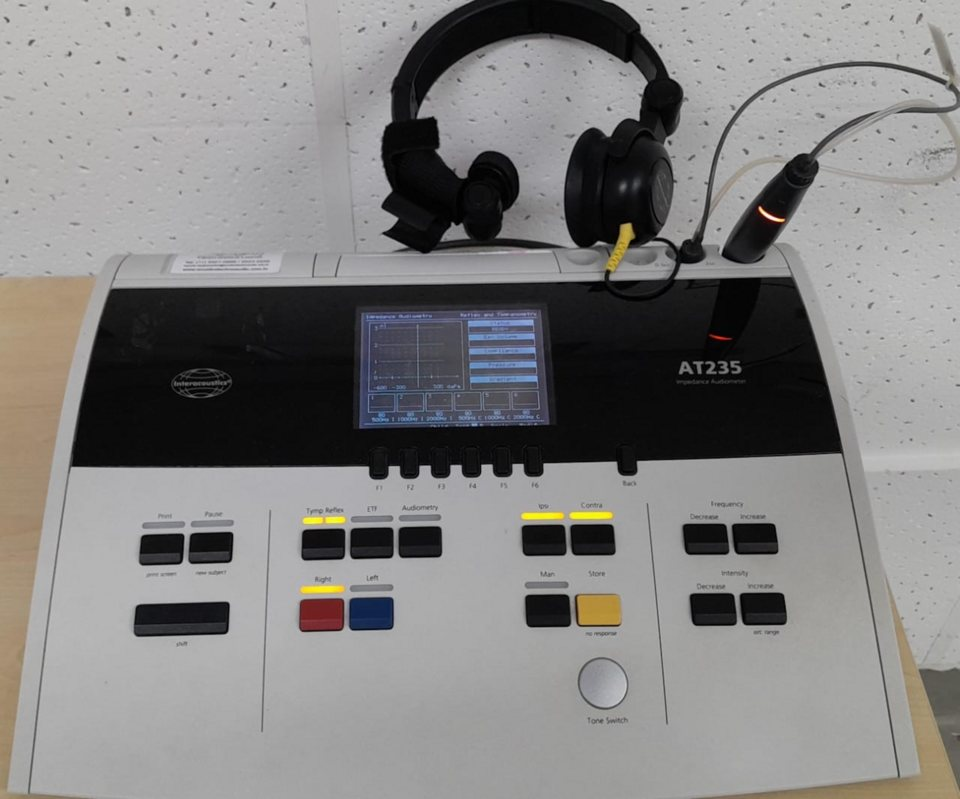
A middle-ear analyser (tympanometer) with its probe and contralateral earphone.Image: AraujoLN, Wikimedia Commons, CC BY 4.0
A type C tympanogram: the peak is shifted to negative pressure.Image: Rafhaela Eloy, Wikimedia Commons, CC BY 4.0
Background and principle of operation
Acoustic impedance Z is the ratio of sound pressure p to volume velocity U (the volume of air moved per second) at a surface. Acoustic admittance Y is its reciprocal, Y = U / p: the ease with which sound flows. Immittance is the umbrella term for both. Admittance is a complex quantity with a real part, conductance G (energy absorbed, related to resistance and friction), and an imaginary part, susceptance B. Susceptance is positive for stiffness-dominated (compliant) systems and negative for mass-dominated systems. At a low probe frequency such as 226 Hz the normal adult middle ear is stiffness-dominated, so admittance behaves almost like a compliance (a volume of air).
Y = U / p = G + jB
B_compliance = ω V / (ρ c²)
where U is volume velocity, p sound pressure, G conductance, B susceptance, ω = 2πf the angular frequency, V the equivalent air volume and ρc² the adiabatic bulk modulus of air (about 1.42 × 106 dyn/cm² at room conditions).
Worked example: at 226 Hz, ω = 2π × 226 = 1420 rad/s. For V = 1 cm³, B = 1420 × 1 / 1.42 × 106 = 1.0 × 10−3 acoustic mho, that is 1 acoustic mmho. This is why 226 Hz is used: at this frequency 1 cm³ (1 ml) of trapped air has an admittance of 1 mmho, so admittance can be reported either in mmho or as an equivalent volume in ml. At 678 Hz the same 1 cm³ gives 3 mmho, and at 1000 Hz about 4.4 mmho, so the ml equivalence holds only at 226 Hz.
The measured admittance at the probe tip is the sum of two parallel paths: the air in the ear canal between the probe and the eardrum, and the middle ear seen through the tympanic membrane. When a large positive or negative pressure (for example +200 daPa) is applied, the eardrum is pushed taut and admits very little; the probe then "sees" mainly the canal air volume. Subtracting this canal value from the value at the admittance peak gives the compensated static acoustic admittance of the middle ear. The peak occurs when canal pressure equals middle-ear pressure, because the eardrum is then least stressed and most mobile. The pressure at the peak therefore estimates middle-ear pressure.
Definition1 daPa (decapascal) = 10 Pa, approximately 1.02 mm H2O, so the two pressure units are nearly interchangeable in older and newer instruments.
The acoustic reflex
A loud sound in either ear causes a bilateral contraction of the stapedius muscle, which stiffens the ossicular chain and reduces admittance at low probe frequencies. The analyser presents a reflex activator (pure tone or broadband noise) either through the probe itself (ipsilateral) or through an earphone on the other ear (contralateral), with the canal pressure held at the tympanogram peak pressure, and detects the small admittance decrease. The lowest activator level producing a repeatable change larger than a criterion (commonly a few hundredths of a mmho) is the acoustic reflex threshold (ART). Reflex decay is tested by holding an activator 10 dB above the ART for about 10 seconds and observing whether the response is sustained.
Architecture and signal flow
Figure 4.2a. Middle-ear analyser. The probe tone and the reflex activator enter the sealed canal, the microphone measures the resulting pressure, and the pump and manometer set and report canal pressure.
Probe tone generator and receiver: produces a steady 226 Hz tone (at a moderate level, commonly around 85 dB SPL in a 2 cm³ cavity; standards cap the level to avoid eliciting reflexes) or 1000 Hz for young infants. Multifrequency instruments sweep the probe frequency, typically from about 226 to 2000 Hz.
Probe microphone: picks up the canal sound pressure. Its signal is band-pass filtered at the probe frequency and rectified or synchronously detected.
Admittance calculation: two design approaches exist. In a constant-volume-velocity design the receiver drive is fixed; the canal SPL is inversely proportional to admittance. In a constant-pressure (automatic gain control) design a feedback loop adjusts the drive to keep the canal SPL constant; the drive needed is proportional to admittance. Modern instruments calibrate this into mmho and often separate B and G using phase detection.
Pump and manometer: a small motor-driven piston or diaphragm pump changes canal pressure, and a pressure transducer reports it. The sweep usually runs from +200 daPa downwards to about −300 or −400 daPa, at a pump speed typically between about 50 and 600 daPa/s (200 daPa/s is a common screening rate). The pressure is the x-axis of the tympanogram.
Reflex stimulus: pure tones (500, 1000, 2000, 4000 Hz) and broadband noise, routed ipsilaterally through a second receiver in the probe, or contralaterally through a supra-aural or insert earphone. Levels are calibrated in dB HL in the same way as audiometer outputs.
Display and storage: tympanogram with peak pressure, compensated static admittance, ear canal volume and tympanometric width; reflex traces with thresholds; decay results.
Components
Component
Function
What can go wrong
Probe tip (disposable ear tip)
Hermetic seal in the ear canal
Wrong size gives a leak; tip pushed against canal wall occludes ports
Probe receiver port
Delivers probe tone and ipsi activator
Wax or moisture in the port reduces output
Probe microphone port
Senses canal SPL
Blocked port gives very low apparent volume and flat trace
Pressure tube and pump
Changes canal pressure
Leaking tube, worn pump seal, slow or uneven sweep
Manometer (pressure transducer)
Measures canal pressure
Zero offset, drift after temperature change
Admittance detector
Converts microphone signal to mmho
Calibration drift; needs cavity check
Contralateral earphone
Presents contra activator
Output not calibrated; cord faults
Software
Controls sweep, detects peaks and reflexes
Wrong normative set (adult versus infant), wrong probe tone selected
Key parameters and specifications
Parameter
Typical value or range
Clinical meaning
Probe tone frequency
226 Hz (adults, older children); 1000 Hz (infants under about 6 months); multifrequency 226 to 2000 Hz
Low frequency makes admittance behave like a volume in adults
Pressure range
about +200 to −400 daPa
Covers normal and markedly negative middle-ear pressure
Pump speed
about 50 to 600 daPa/s; 200 daPa/s common
Faster sweeps shift and broaden the peak slightly
Tympanometric peak pressure (TPP)
typical adults about −100 to +50 daPa
More negative values suggest Eustachian tube dysfunction
Compensated static admittance (Ytm)
typical adults about 0.3 to 1.7 mmho (ranges differ between studies)
Low: stiff or fluid-filled; high: flaccid TM or discontinuity
Ear canal volume (Vea)
typical adults about 0.6 to 1.5 ml; children smaller
Large with flat trace: perforation or patent grommet
Tympanometric width (TW)
typical adults roughly 50 to 110 daPa
Wide peaks are associated with effusion
Reflex activator levels
up to about 100 to 120 dB HL (tones), in 5 dB steps
Keep as low as possible for safety
Acoustic reflex threshold (pure tones)
in normal ears commonly about 70 to 100 dB HL
Elevated or absent with conductive loss, VIII nerve lesions, facial nerve lesions
Reflex criterion
commonly about 0.02 to 0.03 mmho repeatable change
Smaller changes may be noise or artefact
All normative ranges above are typical adult values quoted for teaching. Use the norms that match your instrument, probe tone, pump speed and population (for example infants, children, older adults), and check the current literature and standards.
Algorithms and equations
Vea = Y(+200 daPa) (ml at 226 Hz)
Ytm = Y(peak) − Y(+200 daPa) (mmho)
TW = P_high − P_low at Y = Ytm / 2 (daPa)
where Y(+200) is the admittance with the eardrum stiffened by positive pressure, Y(peak) the maximum admittance, and P_low, P_high the pressures on either side of the peak where the compensated admittance falls to half of Ytm.
Worked example: a tympanogram reads 1.05 mmho at +200 daPa and 1.65 mmho at the peak, which is at −20 daPa. Vea = 1.05 ml; Ytm = 1.65 − 1.05 = 0.60 mmho. Half of Ytm is 0.30 mmho; the compensated curve crosses 0.30 mmho at −60 daPa and +20 daPa, so TW = 20 − (−60) = 80 daPa. All three values lie inside the typical adult ranges: a type A tympanogram.
Some instruments compensate using the value at the negative tail (−400 daPa) instead of +200 daPa; the two can differ by a few tenths of a mmho because the negative tail is usually lower. Report which one you used.
Tympanogram types (Jerger and Liden classification)
Type
Shape
Commonly associated with
A
Clear peak near 0 daPa, normal height
Normal middle ear (also seen in many sensorineural losses)
As
Peak near 0 daPa, shallow (low Ytm)
Stiff system: otosclerosis, tympanosclerosis
Ad
Peak near 0 daPa, very high or open-topped
Ossicular discontinuity, flaccid or scarred eardrum
B
Flat, no identifiable peak
Effusion (normal Vea), perforation or patent tube (large Vea), wax or probe against wall (small Vea)
C
Peak at markedly negative pressure (below about −100 daPa)
Eustachian tube dysfunction, early or resolving effusion
Try it: tympanogram shape and its measures
Choose a type to load a typical shape, then move the sliders. The instrument measures are recomputed numerically from the plotted curve. The shaded limits are typical adult values for teaching only.
Peak pressure
Static admittance (Ytm)
Tympanometric width
Ear canal volume
Pattern (typical adult limits)
Compensated admittanceHalf-height lineTypical adult box (TPP −100 to +50 daPa, Ytm 0.3 to 1.7 mmho)
Clinical applications
Otitis media with effusion in children: a type B tympanogram with normal ear canal volume supports effusion; serial tympanometry tracks resolution. Tympanometry is also used in school and preschool screening programmes.
Eustachian tube dysfunction: type C with negative peak pressure; Eustachian tube function tests (Valsalva, Toynbee) repeat tympanometry before and after swallowing manoeuvres.
Perforation and grommet patency: flat trace with a large ear canal volume (adults often above about 2 ml) indicates that the probe is measuring the canal plus the middle ear and mastoid air cells.
Otosclerosis and ossicular discontinuity: shallow (As) or very high (Ad) peaks, together with absent reflexes and an air-bone gap.
Acoustic reflexes: patterns across ipsi and contra measurements in both ears help localise a lesion (middle ear, cochlea, VIII nerve, brainstem, facial nerve). Reflexes present at reduced sensation levels suggest cochlear recruitment; abnormal reflex decay at 500 or 1000 Hz raises suspicion of a retrocochlear lesion.
Infants: below about six months of age, the 1000 Hz probe tone is recommended because the compliant canal walls and different middle-ear mechanics can give a normal-looking 226 Hz tympanogram even when effusion is present.
Cross-check with the audiogram: a normal tympanogram and present reflexes in an ear with a large air-bone gap should prompt a check of bone-conduction calibration or masking.
Limitations, errors and troubleshooting
Problem
Cause
What to check or do
"Leak" message or pressure will not build
Poor seal, wrong tip size, perforation with patent Eustachian tube, cracked tube
Change tip size, reinsert with gentle pinna pull; test the probe in the calibration cavity
Flat trace with very small volume (e.g. under about 0.3 ml)
Probe against canal wall or blocked by wax
Otoscopy, reposition probe, clean or replace probe tubes
Flat trace with large volume
Perforation or patent grommet (or a leak)
Otoscopy; compare with other ear and history
Jagged or noisy trace
Patient talking, swallowing, crying, movement
Repeat with the patient still and quiet
Peak shift between repeat runs
Pump speed and sweep direction effects, Eustachian tube opening
Use a consistent speed and direction; report the settings
Reflex seen in a very high-activator ipsi test only
Probe artefact (activator and probe interaction in the cavity)
Check in a hard-walled cavity: a "reflex" there is artefact
Reflex absent in all conditions
Conductive component in the probe ear, severe loss, VIII or VII lesion, poor seal
Interpret pattern with audiogram and tympanogram
Volume readings incorrect in cavities
Calibration drift
Measure 0.5, 2.0 and 5.0 cm³ cavities; send for calibration if outside tolerance
RememberThe daily check for a middle-ear analyser is to insert the probe into the calibration cavities of known volume supplied with the instrument (commonly 0.5, 2.0 and 5.0 cm³). The displayed volume should match the cavity within the manufacturer's tolerance, and the tympanogram should be flat (a rigid cavity has no eardrum). Annual calibration also checks probe tone frequency and level, pressure accuracy, pump rate and reflex activator levels.
SafetyAlways perform otoscopy before inserting the probe. Avoid large pressure excursions after recent ear surgery, and keep reflex activator levels as low as possible; repeated high-level ipsilateral and contralateral stimuli can themselves cause temporary threshold shift or discomfort, particularly in patients with hyperacusis.
Demonstration
Equipment: a clinical middle-ear analyser with ear tips of several sizes, calibration cavities, an otoscope, and a volunteer; the u4-tymp browser demo on this page.
Show the probe and identify its three ports: receiver, microphone and pressure tube. Relate them to Figure 4.2a.
Insert the probe into the 2.0 cm³ cavity and run a tympanogram. Students observe a flat trace and a volume reading near 2.0 ml. Repeat with 0.5 and 5.0 cm³.
Perform otoscopy on a volunteer, select a tip, and show how a good seal is obtained. Demonstrate a deliberate leak (loose tip) and the resulting message.
Run a tympanogram and point out the pressure sweep on the display, the peak, the peak pressure, the ear canal volume and the tympanometric width.
Ask the volunteer to perform a gentle Valsalva manoeuvre (only if comfortable) and repeat the tympanogram to show a positive shift of the peak.
Measure ipsilateral reflex thresholds at 1000 Hz in 5 dB steps; show the admittance decrease and the criterion.
Using the browser demo, load each type, relate it to the conditions in the table, and use the ear canal volume slider to show how a flat trace is interpreted differently with small, normal and large volumes.
Current developments
Wideband acoustic immittance (wideband tympanometry and absorbance): a click or chirp probe measures energy absorbance from roughly 0.2 to 8 kHz at ambient pressure or across a pressure sweep, giving frequency-resolved middle-ear information.
Multifrequency tympanometry and resonant frequency estimation, used in otosclerosis and ossicular disorders.
Handheld, battery-powered screening tympanometers with automatic interpretation for school and community screening.
Integration of tympanometry, reflexes and OAEs in one probe and instrument for newborn and paediatric test batteries.
Wideband acoustic reflex measurement, which may detect reflexes at lower activator levels than single-frequency methods.
Practical activity and assessment
Task (Practical P9): identify the major parts of a middle-ear analyser and interpret sample tympanograms.
Label a photograph or drawing of the probe and the instrument front panel with each functional block from Figure 4.2a.
Perform the cavity check with the three calibration volumes and record the readings against the nominal values.
Record tympanograms on two classmates (with consent and otoscopy) and extract Vea, TPP, Ytm and TW.
Interpret five sample tympanograms provided by the faculty (one of each type). For each, state the measures, the type, one likely cause and one additional test that would help.
Deliverable: labelled diagram, cavity check table, and an interpretation sheet for the sample curves.
References
IEC 60645-5, Electroacoustics: Audiometric equipment, Part 5: Instruments for the measurement of aural acoustic impedance/admittance.
ANSI S3.39, Specifications for Instruments to Measure Aural Acoustic Impedance and Admittance (Aural Acoustic Immittance).
Hunter, L. L. and Shahnaz, N. Acoustic Immittance Measures: Basic and Advanced Practice. Plural Publishing.
Jerger, J. (1970). Clinical experience with impedance audiometry. Archives of Otolaryngology, 92, 311 to 324.
Margolis, R. H. and Heller, J. W. (1987). Screening tympanometry: criteria for medical referral. Audiology, 26, 197 to 208.
Katz, J. (ed.) Handbook of Clinical Audiology. Wolters Kluwer (chapters on tympanometry and acoustic reflexes).
Manufacturer's operating manual for the departmental middle-ear analyser.
4.3
Otoacoustic emission analyser
1 hour13.11.2026Practical P9
Otoacoustic emissions (OAEs) are faint sounds produced by the active mechanics of the outer hair cells and transmitted back through the middle ear into the ear canal. An OAE analyser stimulates the ear, records the canal sound with a sensitive microphone and uses averaging and spectral analysis to pull the emission out of the noise. The instrument is simple in hardware and demanding in signal processing, and most clinical errors come from probe fit, noise and middle-ear status.
What it is
A probe containing one or two miniature receivers and a low-noise microphone, connected to a digital unit that generates stimuli, digitises the microphone signal, rejects noisy segments, averages, analyses the response in time and frequency, and applies pass/refer criteria.
Why it is required
OAEs give an objective, fast test of outer hair cell function without a behavioural response. They are central to newborn hearing screening, ototoxicity monitoring, differential diagnosis (for example auditory neuropathy spectrum disorder) and cross-checking behavioural results.
How it works
For transient-evoked OAEs (TEOAEs) the probe plays clicks and the averaged canal response 2.5 to 20 ms later is the emission. For distortion-product OAEs (DPOAEs) two tones f1 and f2 are played together and the analyser measures the level at the distortion frequency 2f1 − f2 against the noise in neighbouring frequency bins.
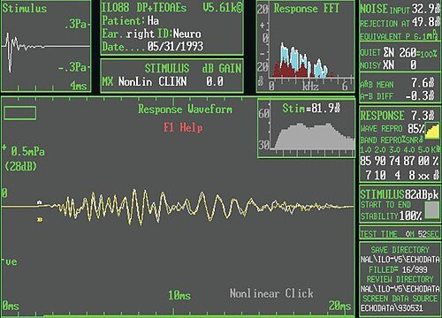
A TEOAE analyser display: stimulus, response waveform and signal-to-noise by frequency band.Image: Hatzopoulos S, Ciorba A, Corazzi V, Skarzynski PH, Wikimedia Commons, CC BY 3.0
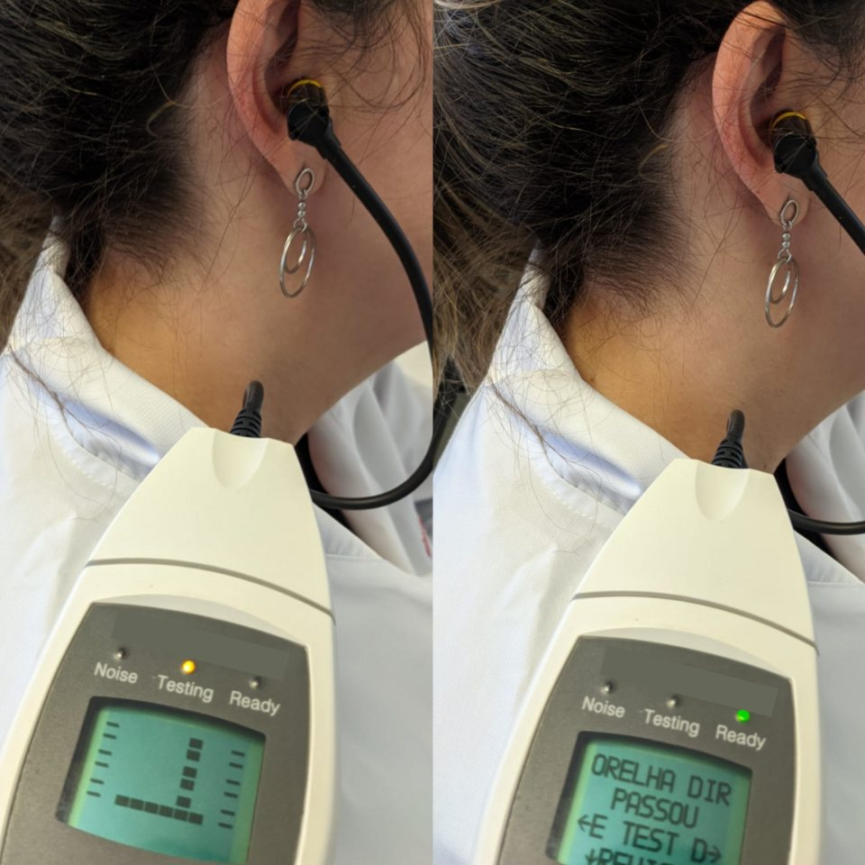
OAE screening with a handheld device and an ear-canal probe.Image: Ray Soares Nogueira, Wikimedia Commons, CC BY-SA 4.0
Background and principle of operation
The cochlea is not a passive frequency analyser. Outer hair cells change length in response to their receptor potential (electromotility), feeding energy back into basilar membrane motion. This cochlear amplifier increases sensitivity for soft sounds and sharpens frequency tuning. It is also nonlinear: gain is high at low input levels and falls at high levels. Two consequences can be measured in the ear canal:
Part of the energy is reflected back from irregularities along the basilar membrane, producing delayed echoes (the basis of TEOAEs and stimulus-frequency OAEs).
When two tones interact in a nonlinear system, new frequency components appear that were not in the stimulus (distortion products). The largest in humans is at 2f1 − f2.
The emission travels backwards through the ossicles and eardrum and appears as a sound pressure in the sealed canal, typically in the range of about −10 to +20 dB SPL in healthy ears, which is 50 to 80 dB below the stimulus. Room noise, breathing and the microphone's own noise can be at similar levels. The whole design of the analyser is aimed at measuring a signal of about 0 dB SPL reliably in that environment.
Types of OAE:
Spontaneous OAEs (SOAEs): narrowband tones present without stimulation in many normal ears; not used for screening.
Transient-evoked OAEs (TEOAEs): responses to clicks or short tone bursts; broadband, strongest roughly between 1 and 4 kHz.
Distortion-product OAEs (DPOAEs): responses to two simultaneous tones; frequency-specific and able to test higher frequencies (to about 6 to 8 kHz and beyond with suitable probes).
Stimulus-frequency OAEs (SFOAEs): at the frequency of a single tone; mainly a research measure.
Architecture and signal flow
Figure 4.3a. OAE analyser. The outgoing path (top) generates and delivers the stimulus; the return path (bottom) digitises, cleans, averages and analyses the canal signal. The in-ear check uses the microphone to verify probe fit and set stimulus levels.
Stimulus generator: produces clicks (typically about 80 to 86 dB peSPL for screening) or pairs of pure tones, digitally, with exact timing.
DAC and amplifiers, receivers: DPOAE probes use two separate receivers, one for each primary tone. If both tones came from one receiver, distortion in that receiver would itself create a 2f1 − f2 component indistinguishable from the ear's emission.
Ear canal: sealed by a soft tip. Canal volume and seal determine the stimulus level actually reached.
Probe microphone: a low-noise miniature microphone. Its self-noise sets the ultimate noise floor, and its frequency response is included in the calibration.
Preamplifier and ADC: amplify and high-pass filter (to remove low-frequency breathing and movement noise), then digitise with enough resolution to handle a loud stimulus and a faint emission at the same time.
Artefact rejection: each frame (the response to one stimulus or block) is compared with a noise threshold; frames with high noise are discarded.
Averaging: accepted frames are added alternately into two buffers A and B. The mean of A and B is the response estimate; their difference is a noise estimate.
Analysis: TEOAE: time window and band-wise spectrum; DPOAE: FFT with the emission and noise read from specific frequency bins.
Criteria: SNR, reproducibility and minimum emission level per band, combined into a pass/refer decision for screening or displayed as numbers for diagnosis.
Blockage with wax or vernix, moisture; the most common hardware fault
Receivers
Deliver stimuli
Distortion at high levels, damage from drops
Microphone
Records canal sound
Increased self-noise, sensitivity drift
ADC and processor
Digitise and process
Clipping with loud noise, insufficient dynamic range
Software protocol
Stimulus parameters and pass criteria
Wrong protocol (diagnostic vs screening), outdated criteria
Test cavity
System check
Should show no emission; a response in a cavity reveals system distortion or artefact
Key parameters and specifications
Parameter
Typical value or range
Clinical meaning
TEOAE click level
about 80 to 86 dB peSPL
High enough to evoke robust emissions, low enough for comfort
TEOAE analysis window
about 2.5 or 4 ms to 20 ms after the click
Early part excluded to remove stimulus ringing
TEOAE analysis bands
half-octave or octave bands centred about 1 to 4 kHz
Frequency-specific information from a broadband click
DPOAE primary ratio f2/f1
about 1.2 (commonly 1.22)
Near-optimal for the 2f1 − f2 level in humans
DPOAE primary levels L1/L2
commonly 65/55 dB SPL
L1 above L2 gives larger DPs at moderate levels
DP-gram f2 range
about 1 to 8 kHz (to higher frequencies with suitable probes)
Frequency-specific cochlear status
Normal emission level
roughly −10 to +20 dB SPL
Far below the stimulus; needs averaging
Noise floor
often around −10 to −20 dB SPL after averaging in a quiet room
Emission must exceed it by the SNR criterion
SNR criterion
protocols commonly require about 3 to 6 dB or more in several bands
Sets the sensitivity and specificity of the screen
TEOAE reproducibility
correlation between buffers A and B, often required above roughly 50 to 70 %
Confirms the response is repeatable
Pass criteria differ between manufacturers and screening programmes. The numbers here illustrate the kind of rule used; programmes should use a validated, documented protocol.
Algorithms and equations
DPOAE frequencies
f1 = f2 / 1.22
f_DP = 2 f1 − f2
where f1 is the lower primary, f2 the higher primary and f_DP the frequency of the cubic distortion product measured in the ear canal.
Worked example: for f2 = 2000 Hz, f1 = 2000 / 1.22 = 1639 Hz and f_DP = 2 × 1639 − 2000 = 1279 Hz. For f2 = 4000 Hz, f1 = 3279 Hz and f_DP = 2557 Hz. The DP is generated near the f2 place on the basilar membrane but is recorded at a lower frequency; DP-grams are therefore plotted against f2 (or the geometric mean of f1 and f2), not against f_DP.
Signal-to-noise ratio and averaging
SNR (dB) = L_DP − L_noise
noise after N frames ≈ noise(1 frame) / √N
where L_DP is the level in the DP frequency bin (dB SPL), L_noise the mean level of neighbouring bins (dB SPL), and N the number of accepted frames.
Worked example: a DP of 4 dB SPL is measured with a noise floor of −8 dB SPL, giving an SNR of 4 − (−8) = 12 dB, which would satisfy a 6 dB criterion. If the noise floor is 0 dB SPL after 64 averages, increasing to 256 averages (four times as many) lowers the noise by 20 log10(√4) = 6 dB, to about −6 dB SPL, provided the noise is random and stationary. Each doubling of averages gains about 3 dB.
TEOAE nonlinear (derived) averaging
A click response in the ear canal contains the linear ringing of the probe and canal, which can be much larger than the emission and lasts several milliseconds. In the nonlinear protocol the stimulus is a train of four clicks: three of one polarity at level 1 and a fourth of opposite polarity at three times the amplitude (about 9.5 dB higher, since 20 log103 = 9.5). Their sum is zero for any component that scales linearly with the stimulus, so the stimulus artefact and passive reflections cancel. The emission saturates at these levels (it grows less than proportionally), so it does not cancel and survives in the sum.
response = (A + B) / 2
noise = (A − B) / 2
reproducibility = correlation(A, B) × 100 %
where A and B are the two interleaved average buffers.
FFT bin planning
Worked example: with a sampling rate of 48 kHz and an FFT length of 4096 points, the bin spacing is 48 000 / 4096 = 11.72 Hz. The instrument chooses f1 and f2 as exact multiples of the bin spacing so that the primaries and the DP fall exactly in bins, avoiding spectral leakage from the loud primaries into the DP bin. The noise estimate uses several bins on either side of the DP bin.
Clinical applications
Newborn hearing screening: automated TEOAE or DPOAE screening with pass/refer outputs, usually in a two-stage protocol with automated ABR. In neonatal intensive care graduates, ABR screening is recommended because OAEs do not detect neural disorders.
Auditory neuropathy spectrum disorder: present OAEs with absent or grossly abnormal ABR indicate that outer hair cells function while neural transmission is impaired.
Ototoxicity monitoring: serial high-frequency DP-grams can show outer hair cell changes before the audiogram changes.
Noise exposure: reduced DP levels in the 3 to 6 kHz region in workers or musicians.
Cross-check of behavioural thresholds: robust OAEs in an ear with a claimed severe loss suggest non-organic loss or a retrocochlear lesion.
Clinical linkA pass does not prove normal hearing: OAEs can be present with a mild loss and are unaffected by neural or central disorders. A refer does not prove cochlear loss: middle-ear effusion, vernix, a blocked probe or noise can all remove the emission. OAEs are usually absent when cochlear hearing loss exceeds roughly 30 to 40 dB HL, but this is a guide, not a rule.
Limitations, errors and troubleshooting
Problem
Cause
What to check or do
Stimulus level too low or spectrum irregular in the probe check
Poor seal, tip against canal wall, blocked tube
Refit, change tip size, check tubes; repeat the probe check
High noise, many rejected frames
Infant sucking or crying, breathing, room noise, cable rubbing
Test during sleep, quieten the room, secure the cable
Absent OAEs in all bands
Middle-ear effusion, vernix, blocked probe, genuine loss
Otoscopy, tympanometry (1000 Hz in infants), retest later
Response present in a test cavity
System distortion (DPOAE) or stimulus ringing (TEOAE)
Instrument fault: stop and send for service
Large apparent low-frequency response
Stimulus artefact from a poor fit
Refit; check the early window is excluded
Inconsistent high-frequency DP levels between tests
Standing waves in the canal change the level at the eardrum
Keep insertion depth consistent; use in-ear calibration methods where available
Figure 4.3b. A troubleshooting flow for absent or poor OAE responses. Only when the probe, noise and middle-ear checks are satisfactory is a cochlear cause likely.
Demonstration
Equipment: a diagnostic or screening OAE unit with TEOAE and DPOAE protocols, probe tips, test cavity, otoscope and a volunteer.
Show the probe and the ports of the receivers and microphone; relate them to Figure 4.3a.
Run the cavity test: students observe that no emission is present and see the noise floor.
Fit the probe on a volunteer after otoscopy. Display the probe-fit (stimulus) check: the click waveform and spectrum or the primary levels in the canal.
Run a TEOAE test. Point out the stimulus waveform, the A and B traces, the time window, the band-wise emission and noise, reproducibility and the rejected frame count.
Run a DP-gram with f2/f1 = 1.22 and L1/L2 = 65/55 dB SPL. Show the DP and noise floor at each f2 and the SNR.
Ask the volunteer to talk or chew during a run and observe noise and rejections rise. Then loosen the probe and observe the probe check fail.
Compute f1 and f_DP for two f2 values on the board and compare with the instrument display.
Current developments
In-ear calibration methods based on forward pressure level, which reduce the effect of canal standing waves on high-frequency stimulus levels.
Swept-tone (chirp) DPOAE methods that measure a continuous DP-gram quickly and allow separation of the distortion and reflection components.
Extended high-frequency DPOAEs for early detection of ototoxic and noise damage.
Combined OAE and automated ABR screening devices, and wider use of wideband immittance to interpret refer results.
Low-cost and portable screening devices designed for community programmes, which require independent validation before clinical adoption.
Practical activity and assessment
Task (Practical P9): create a troubleshooting flowchart for absent or poor OAE responses and document one measurement.
Observe or perform TEOAE and DPOAE tests on one volunteer. Record probe-fit data, noise, rejected frames, band SNRs and reproducibility.
Repeat one test with a deliberately poor fit and one with added noise. Record how each metric changed.
Draw your own troubleshooting flowchart (extend Figure 4.3b) covering probe, noise, middle ear, instrument checks and referral.
Calculate f1 and f_DP for f2 = 1000, 1500, 3000 and 6000 Hz with f2/f1 = 1.22.
Deliverable: flowchart, the measurement table, and a paragraph explaining which errors the pass/refer logic can and cannot detect.
References
IEC 60645-6, Electroacoustics: Audiometric equipment, Part 6: Instruments for the measurement of otoacoustic emissions.
Kemp, D. T. (1978). Stimulated acoustic emissions from within the human auditory system. Journal of the Acoustical Society of America, 64, 1386 to 1391.
Robinette, M. S. and Glattke, T. J. (eds.) Otoacoustic Emissions: Clinical Applications. Thieme.
Dhar, S. and Hall, J. W. Otoacoustic Emissions: Principles, Procedures, and Protocols. Plural Publishing.
Katz, J. (ed.) Handbook of Clinical Audiology. Wolters Kluwer (chapter on otoacoustic emissions).
OAE equipment operating manual and calibration guidance from the manufacturer.
4.4
Instrumentation for auditory evoked potentials
1 hour19.11.2026Practical P9
Auditory evoked potentials (AEPs) are voltage changes in the EEG that are time-locked to a sound. The auditory brainstem response (ABR) is less than a microvolt in amplitude and is buried in EEG and muscle activity tens of times larger. AEP instruments recover it with careful electrode practice, a differential amplifier with high common-mode rejection, band-pass filtering, stimulus-synchronised digitisation and averaging over thousands of sweeps.
What it is
A system that delivers calibrated clicks, tone bursts or chirps through earphones or a bone vibrator, and records the scalp voltage through electrodes, an isolated biopotential amplifier, filters and an ADC, averaging the sweeps that follow each stimulus.
Why it is required
AEPs estimate hearing thresholds in infants and in people who cannot give reliable behavioural responses, identify neural disorders (auditory neuropathy, vestibular schwannoma), support newborn screening and allow intraoperative monitoring.
How it works
Each stimulus starts a recording sweep. Activity that is time-locked to the stimulus is identical in every sweep and adds up; background EEG is random with respect to the stimulus and averages towards zero. After N sweeps the noise has fallen by about √N, and the response waveform (waves I, III, V for the ABR) becomes visible and measurable.
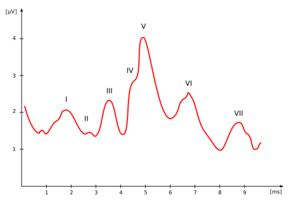
An auditory brainstem response with waves I to VII labelled.Image: Sutashu (Wikimedia Commons), Wikimedia Commons, CC BY 2.5
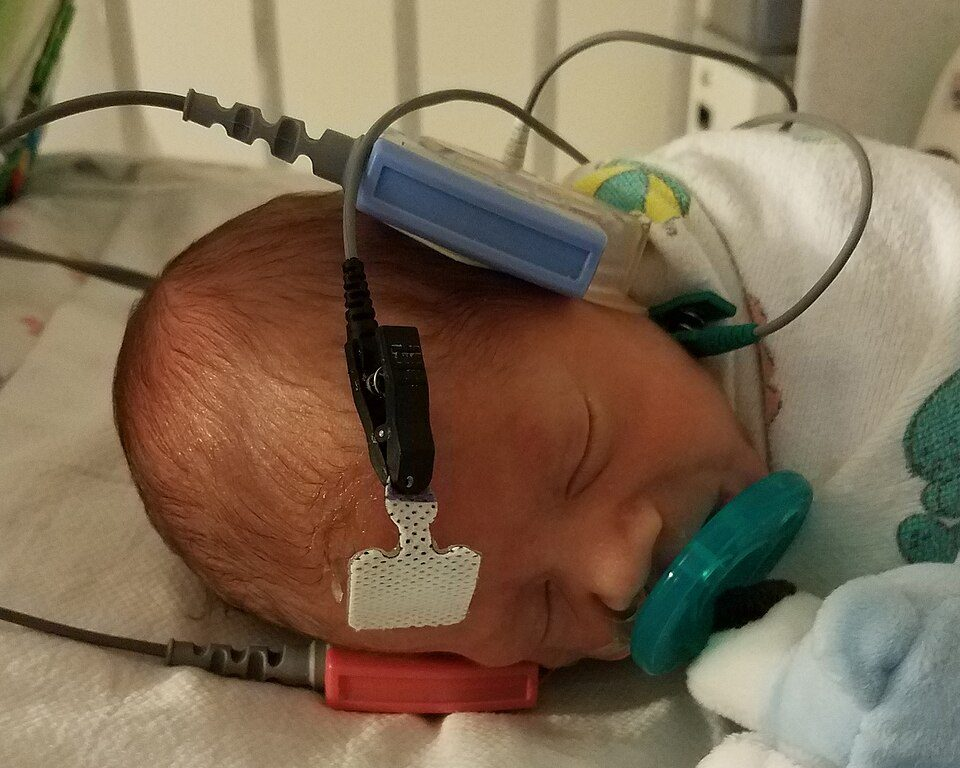
Automated ABR newborn screening with disposable electrodes and earphone couplers.Image: Liannadavis, Wikimedia Commons, CC BY-SA 4.0
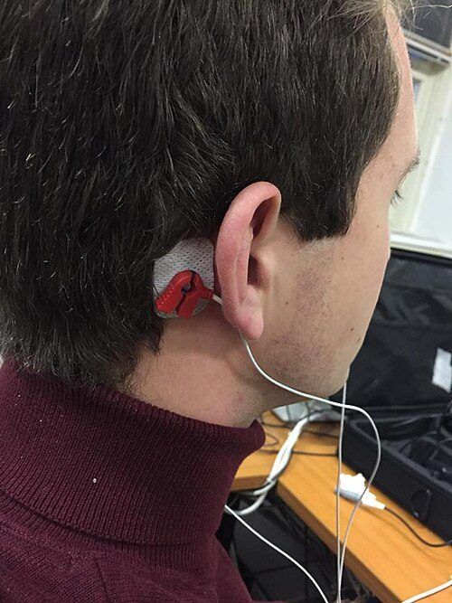
A recording electrode placed on the mastoid for evoked-potential testing.Image: Vuklan, Wikimedia Commons, CC BY-SA 4.0
Background and principle of operation
When sound reaches the cochlea, the auditory nerve and brainstem nuclei fire in synchrony. The summed electrical fields of these neurons reach the scalp as tiny potentials. They are classified by latency:
Electrocochleography (ECochG): cochlear microphonic, summating potential and compound action potential in the first few milliseconds.
Auditory brainstem response (ABR): waves I to V within about 10 ms; wave I from the distal auditory nerve, wave III from the lower pons (cochlear nucleus region), wave V from the region of the lateral lemniscus and inferior colliculus.
Auditory middle latency response (AMLR): about 10 to 80 ms.
Auditory late or cortical responses: P1-N1-P2 and later components, 50 to 300 ms and beyond (topic 4.5).
Auditory steady-state response (ASSR): a response that follows an amplitude-modulated tone and is detected in the frequency domain at the modulation rate.
The measurement problem is one of signal-to-noise ratio. The ABR wave V is typically about 0.3 to 0.7 µV in a normal adult at high click levels. Background EEG and myogenic noise at the scalp are typically in the range of about 5 to 20 µV RMS in the ABR pass-band in a relaxed or sleeping patient, and mains interference can induce tens of millivolts of common-mode voltage on the body. Every block of the instrument exists to raise the SNR from about 1:20 in a single sweep to a clearly readable waveform.
Architecture and signal flow
Figure 4.4a. AEP acquisition chain. The stimulus generator both drives the transducer and triggers each recording sweep, so that the response occurs at the same time in every sweep and survives averaging.
Stimulus generator: creates clicks, tone bursts or chirps at a set level, polarity and rate, and sends a trigger pulse at each stimulus onset.
Transducer: insert earphones are preferred. The sound travels through a plastic tube, which delays it (typically about 0.8 to 0.9 ms for common insert earphones), increases the distance between transducer and electrodes (less electromagnetic stimulus artefact) and gives high interaural attenuation. Supra-aural earphones and bone vibrators are also used.
Electrodes: silver/silver-chloride discs or disposable pre-gelled electrodes. A typical single-channel ABR montage places the non-inverting electrode at the vertex (Cz) or high forehead (Fz), the inverting electrode on the ipsilateral mastoid or earlobe, and the ground (common) on the low forehead (Fpz) or the contralateral side. A second channel with the contralateral mastoid helps identify wave I and wave V.
Differential amplifier: amplifies the difference between the two active inputs and rejects the voltage common to both (mains interference, most distant EEG). It sits behind an isolation barrier for patient safety.
Band-pass filter: removes slow EEG and electrode drift (high-pass) and high-frequency muscle and instrument noise (low-pass). Typical ABR settings are about 100 (or 30) Hz to 3000 Hz.
ADC: samples a fixed window after each trigger, for example 512 or 1024 samples over 10 to 25 ms.
Artefact rejection: a sweep whose amplitude exceeds a threshold (set in microvolts at the input) is discarded, because large transients from movement or muscle would dominate the average.
Averager and display: adds accepted sweeps, often into two interleaved buffers so that replicability can be judged; shows the running average, the number of sweeps, residual noise estimates and cursors for latency and amplitude.
Components
Component
Function
What can go wrong
Electrodes and gel/paste
Convert ionic current in tissue to electronic current
High or unequal impedance, dried gel, polarisation drift with poor metals
Loops pick up mains fields; moving leads create artefacts
Preamplifier (head box)
Differential gain, isolation
Low CMRR, saturation from large offsets, broken input
Filters
Limit bandwidth
Wrong settings distort waveform or shift latency
ADC and computer
Digitise and average
Too low a sampling rate for the window, clipping
Transducers
Deliver stimulus
Uncalibrated, tube kinked or blocked, wrong delay correction
Software
Protocols, artefact rejection, marking
Wrong protocol, normative set, or polarity
Key parameters and specifications
Parameter
Typical value or range
Clinical meaning
Electrode impedance
below about 5 kΩ; inter-electrode difference below about 2 kΩ
Low and balanced impedance keeps common-mode rejection effective
Amplifier CMRR
typically 100 dB or more at mains frequency
Rejection of mains and other common-mode signals
Amplifier input impedance
tens to hundreds of MΩ or more
Reduces the effect of electrode impedance imbalance
Gain
about 104 to 105 in classic systems; lower with 24-bit ADCs
Maps microvolts onto the ADC range
ABR filter
about 100 (or 30) to 3000 Hz
30 Hz high-pass preserves low-frequency energy in infant and tone-burst ABRs
Analysis window
10 to 15 ms (click, adults); 20 to 25 ms (infants, low-frequency tone bursts)
Must contain wave V at low levels
Stimulus rate
about 11 to 40 per second; odd values such as 19.1 or 21.1/s
Non-integer rates avoid synchrony with mains harmonics
Click duration
100 µs rectangular pulse
Broadband, most synchronous response
Sweeps per average
about 1000 to 4000 (fewer at high levels, more near threshold)
Sets residual noise
Artefact rejection limit
often around ±10 to ±25 µV referred to input
Balances rejection of bad sweeps against test time
Adult click ABR latencies (high level)
I about 1.5 to 1.7 ms, III about 3.5 to 3.9 ms, V about 5.4 to 5.9 ms; I-V about 4.0 ms
Typical adult values only; use laboratory norms
Algorithms and equations
Differential amplification and common-mode rejection
Vout = Ad (V+ − V−) + Acm (V+ + V−) / 2
CMRR (dB) = 20 log10 (Ad / Acm)
where V+ and V− are the non-inverting and inverting input voltages, Ad the differential gain and Acm the common-mode gain.
Worked example: a common-mode mains voltage of 10 mV is present on both electrodes. With a CMRR of 100 dB (a ratio of 105), the output is as if a differential input of 10 mV / 105 = 0.1 µV were present, a fifth of a typical wave V. This is why CMRR alone is not enough: electrode impedance balance matters as much.
V_error ≈ Vcm × ΔZ / Zin
where Vcm is the common-mode voltage, ΔZ the difference between the two electrode impedances and Zin the amplifier common-mode input impedance.
Worked example: Vcm = 10 mV, ΔZ = 5 kΩ and Zin = 100 MΩ give V_error = 0.01 × 5000 / 108 = 0.5 µV, as large as wave V. Reducing the imbalance to 1 kΩ lowers it to 0.1 µV. Good skin preparation and matched impedances are therefore part of the measurement system.
Averaging
x_k(t) = s(t) + n_k(t)
avg_N(t) = s(t) + (1/N) Σ n_k(t)
residual noise RMS = σ / √N
SNR improvement = 10 log10 (N) dB (in power)
where s(t) is the time-locked response, n_k(t) the noise in sweep k with RMS σ, and N the number of accepted sweeps.
Worked example: with EEG noise of 10 µV RMS per sweep, 2000 sweeps leave 10 / √2000 = 0.22 µV residual noise. A 0.5 µV wave V then stands at about 2.2 times the residual noise RMS (about 7 dB). Quadrupling to 8000 sweeps would halve the residual noise to 0.11 µV but take four times as long: at 21.1 stimuli per second, 2000 sweeps take 2000 / 21.1 = 95 s, and 8000 sweeps would take about 6.3 minutes. The averaging law assumes the noise is random, stationary and uncorrelated with the stimulus; mains interference at a rate locked to the stimulus rate does not average out, which is why odd stimulus rates are chosen.
Latency and amplitude measurement
Absolute latency is measured from stimulus onset at the eardrum to the peak. With insert earphones the tube delay must be subtracted (or the software must be set to do so): a wave V read at 6.5 ms on an uncorrected display with a 0.9 ms tube delay has a true latency of 5.6 ms. Interpeak intervals (I-III, III-V, I-V) are independent of the tube delay and of conductive loss. Amplitudes are measured peak to following trough (for example wave V to the trough after it) and are expressed in microvolts; the V/I amplitude ratio is also used.
Try it: averaging an ABR out of the EEG
Each sweep contains the same simulated ABR plus random EEG noise. Increase the number of sweeps and watch the average converge while the residual noise falls as 1/√N.
Sweeps N
Residual noise (measured)
Predicted σ/√N
SNR (wave V peak / noise RMS)
Test time at 21.1/s
Running averageTrue ABR (hidden in the noise)
Stimulus types
Stimulus
Description
Strengths
Limitations
Click
100 µs rectangular pulse, broadband
Highly synchronous, clear waves I, III, V; neurodiagnosis
Not frequency specific; threshold mainly reflects about 2 to 4 kHz
Tone burst
Short windowed tone (for example 2 cycles rise, 1 plateau, 2 fall, or Blackman gated) at 500 to 4000 Hz
Frequency-specific threshold estimation in infants
Smaller, broader responses, especially at 500 Hz
Chirp
Frequency sweep from low to high, timed to compensate cochlear travelling-wave delay
Larger wave V, faster threshold estimation; narrowband chirps for frequency specificity
Early waves less distinct; norms specific to the chirp design
Bone-conduction click or tone burst
Via bone vibrator
Confirms conductive component in infants
Limited maximum level, stimulus artefact
Stimulus polarity matters. Rarefaction and condensation clicks give slightly different latencies. Alternating polarity cancels much of the electromagnetic stimulus artefact and the cochlear microphonic; for suspected auditory neuropathy, separate rarefaction and condensation averages are needed to show a cochlear microphonic that inverts with polarity. Click levels are given in dB nHL or dB peSPL; reference values for short-duration signals are addressed in ISO 389-6, and the signals themselves in IEC 60645-3.
Clinical applications
Threshold estimation in infants: tone-burst or narrowband chirp ABR at 500 to 4000 Hz by air and bone conduction, to fit hearing aids within the early-intervention time frame.
Automated ABR newborn screening: fixed-level click or chirp with statistical response detection, particularly for NICU graduates.
Neurodiagnosis: prolonged I-V interval or interaural wave V latency difference can indicate a retrocochlear lesion; MRI is the definitive test.
Auditory neuropathy spectrum disorder: cochlear microphonic present with absent or abnormal neural waves.
Intraoperative monitoring: ABR and ECochG during posterior fossa surgery.
Cochlear implant work-up: electrically evoked ABR through the implant uses the same recording chain.
Limitations, errors and troubleshooting
Problem
Cause
What to check or do
50 Hz (or 60 Hz) hum on the trace
High or unbalanced impedance, lead loops, nearby mains equipment
Re-prepare skin, braid leads, move away from power cables, switch off unnecessary equipment; use an odd stimulus rate
Many rejected sweeps
Muscle tension, movement, awake infant
Relax the patient, support the neck, test during natural sleep
Large artefact at the start of the trace
Electromagnetic stimulus artefact
Use insert earphones, alternating polarity, route transducer cables away from electrode leads
Use the standard protocol filters; prefer zero-phase digital filters
Response does not replicate
Insufficient averaging, noise
Increase sweeps, compare two buffers, use residual noise estimates
SafetyAEP systems connect conductive electrodes directly to the patient. They must meet IEC 60601-1 and the particular standard for evoked response equipment, with isolated (type BF or CF) applied parts that limit patient leakage current to microampere levels. Never connect electrode leads to non-medical equipment, use only the approved power supply, keep liquids away, and inspect leads for damaged insulation. Disposable electrodes or proper disinfection protect against cross-infection.
Demonstration
Equipment: clinical ABR system with insert earphones, electrodes, skin preparation gel, impedance meter (built-in), a volunteer lying relaxed, and the u4-abr browser demo.
Show the system components against Figure 4.4a: stimulus unit, transducers, head box (preamplifier) and computer.
Prepare the skin and place electrodes (Cz or Fz, both mastoids, Fpz). Measure impedances and show how the display reports each electrode and the imbalance.
Show the raw EEG on screen, then ask the volunteer to clench the jaw: students observe the muscle artefact and the rejection counter rising.
Record a click ABR at a high level with alternating polarity; show the running average developing and the two buffers overlapping.
Mark waves I, III and V; measure latencies and I-V interval; measure wave V amplitude.
Repeat at lower levels to show the latency increase and amplitude decrease of wave V.
Use the browser demo to show why 1 sweep shows nothing and 2000 sweeps show a clean waveform, and how doubling the EEG noise needs four times as many sweeps for the same residual noise.
Current developments
Chirp stimuli (broadband and narrowband) that increase response amplitude and shorten test time.
Statistical response detection (for example F-ratio or Hotelling-type tests, Bayesian weighted averaging) that gives an objective decision and adapts the number of sweeps.
ASSR systems testing several frequencies in both ears simultaneously with automatic detection.
Wireless, battery-powered head boxes and active electrodes that reduce mains pick-up.
Integrated platforms combining ABR, ASSR, OAE and cortical testing, and research into machine-learning-based waveform interpretation, which requires clinical validation before routine use.
Practical activity and assessment
Task (Practical P9): annotate a sample ABR waveform and identify its measurement parameters.
Obtain a printed or exported ABR report (from a volunteer recording or a teaching set).
Annotate the stimulus type, level, polarity, rate, transducer, filter settings, number of sweeps, rejection count and montage.
Mark waves I, III and V, measure absolute latencies and interpeak intervals, and measure wave V amplitude.
State whether the tube delay has been corrected and how you know.
Using the averaging equation, estimate the residual noise if the EEG noise was 8 µV RMS, and decide whether wave V exceeds it by a factor of at least 2 to 3.
Deliverable: the annotated waveform with a parameter table and a short statement on data quality.
References
Hall, J. W. New Handbook of Auditory Evoked Responses. Pearson.
Hood, L. J. Clinical Applications of the Auditory Brainstem Response. Singular Publishing.
Burkard, R. F., Don, M. and Eggermont, J. J. (eds.) Auditory Evoked Potentials: Basic Principles and Clinical Application. Lippincott Williams and Wilkins.
Webster, J. G. (ed.) Medical Instrumentation: Application and Design. Wiley (biopotential amplifiers and electrical safety).
IEC 60645-3, Electroacoustics: Audiometric equipment, Part 3: Test signals of short duration.
IEC 60645-7, Electroacoustics: Audiometric equipment, Part 7: Instruments for the measurement of auditory brainstem responses.
ISO 389-6, Acoustics: Reference zero for the calibration of audiometric equipment, Part 6: Reference threshold of hearing for test signals of short duration.
IEC 60601-1, Medical electrical equipment: General requirements for basic safety and essential performance; IEC 60601-2-40, Particular requirements for electromyographs and evoked response equipment.
Manufacturer's manual for the departmental evoked potential system.
4.5
Multichannel EEG and ERP systems
1 hour19.11.2026Practical P9
Multichannel EEG systems record brain electrical activity from many scalp sites at once. When the recording is cut into segments time-locked to events such as sounds and averaged, it yields event-related potentials (ERPs): cortical responses such as P1-N1-P2, the mismatch negativity and the P300 that tell us about auditory detection, discrimination and attention. The acquisition chain is a many-channel version of the AEP chain, with the addition of event markers, large data storage and offline processing.
What it is
An electrode cap or array (typically 16 to 256 channels), a multichannel biopotential amplifier with a common reference and ground (or driven right leg), simultaneous sampling ADCs, an event marker input from the stimulus computer, and software for continuous recording and offline ERP analysis.
Why it is required
Cortical auditory potentials assess the central auditory system beyond the brainstem: maturation of the auditory cortex in children with hearing aids or cochlear implants, speech sound discrimination, auditory processing, attention and cognition. Multiple channels show where on the scalp a response appears and allow artefact identification.
How it works
Each channel measures the voltage between one scalp electrode and the reference. Data are recorded continuously with markers at each stimulus. Offline, the data are filtered, cut into epochs around each marker, baseline-corrected, cleaned of artefacts, and averaged separately for each stimulus type. Differences between averages (for example deviant minus standard) isolate specific components.
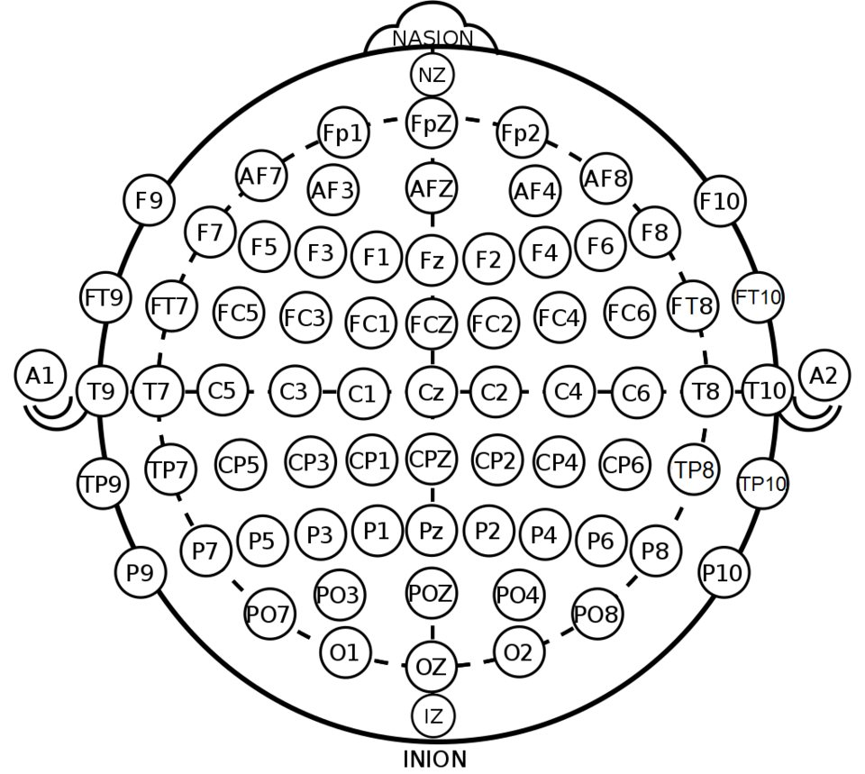
Electrode positions of the international 10-20 system and its extended 10-10 sites.Image: Brylie Christopher Oxley, Wikimedia Commons, CC0
EEG (electroencephalogram) is the ongoing scalp voltage produced mainly by synchronised postsynaptic currents in large populations of cortical pyramidal neurons. It has amplitudes of roughly 10 to 100 µV and is described in frequency bands (delta below 4 Hz, theta 4 to 8 Hz, alpha 8 to 13 Hz, beta 13 to 30 Hz, gamma above about 30 Hz). An ERP is the part of the EEG that is consistently time-locked to an event. Single-trial ERPs are smaller than the ongoing EEG (a few microvolts), so, as for the ABR, averaging over many trials is required, though fewer trials are needed (tens to a few hundred) because cortical responses are larger.
Important auditory ERP components (adult values; latencies change with age and stimulus):
P1-N1-P2 complex (cortical auditory evoked potential, CAEP): P1 at about 50 ms, N1 at about 100 ms, P2 at about 150 to 200 ms, largest at fronto-central sites (Fz, Cz). N1 reflects the detection of sound onset and acoustic change. It is an obligatory (exogenous) response, present without attention. In young children the waveform is dominated by a large P1 at around 100 ms or later, whose latency shortens with auditory cortical maturation; this is used to monitor children with hearing aids and cochlear implants.
Acoustic change complex (ACC): a P1-N1-P2 elicited by a change within an ongoing sound (for example a change in frequency or vowel), showing that the change has been encoded at cortical level.
Mismatch negativity (MMN): a fronto-central negativity at roughly 100 to 250 ms after the onset of a deviant stimulus in a sequence of repeated standards (an oddball paradigm). It is obtained as the difference wave, deviant ERP minus standard ERP, and does not require attention. With a nose reference it typically inverts in polarity at the mastoids. It reflects automatic detection of a change against a memory trace of the standard. Its amplitude is small (often 1 to a few microvolts) and it is hard to detect reliably in individuals, which limits its clinical use.
P300: a positive wave at about 300 ms or later. The P3b, with a parietal maximum, is elicited by attended, task-relevant rare targets (for example counting the rare tones in an oddball sequence); its amplitude is larger when targets are rarer and its latency increases with task difficulty and age. The P3a, with a more fronto-central distribution, is elicited by unexpected novel sounds and reflects involuntary attention switching.
Electrode arrays and the 10-20 system
The international 10-20 system places electrodes at 10 % and 20 % distances along lines between the nasion, inion and the preauricular points. Letters denote regions (Fp frontopolar, F frontal, C central, T temporal, P parietal, O occipital), odd numbers the left hemisphere, even numbers the right, and "z" the midline. Extended 10-10 and 10-5 systems add intermediate positions for 64 to 256 channels. Caps with sewn-in electrodes speed up placement and ensure consistent positions.
Figure 4.5a. Top view of the head with the main 10-20 electrode sites. High-density caps add many intermediate positions from the 10-10 and 10-5 systems.
Architecture and signal flow
Figure 4.5b. Multichannel EEG/ERP system. The stimulus computer sends an event code to the recorder at each sound; offline processing turns the continuous recording into condition-wise averaged ERPs and scalp maps.
Electrode cap: passive Ag/AgCl electrodes with gel (impedances kept low, commonly below about 5 to 10 kΩ), or active electrodes with a built-in preamplifier that tolerate higher impedances. Saline sponge and dry electrodes allow faster setup with more noise.
Multichannel amplifier: each channel is amplified relative to a common reference electrode. A ground or driven right leg (DRL) circuit feeds an inverted copy of the common-mode signal back to the body, actively reducing mains interference. Modern amplifiers are often DC-coupled with a wide input range and 24-bit ADCs, so they need little gain and do not saturate with electrode offsets.
Anti-alias filter and ADC: all channels are sampled simultaneously. Sampling rates of 250 to 1000 Hz are typical for cortical ERPs; brainstem responses need 10 kHz or more.
Event markers: the stimulus computer sends a code (via a parallel or USB trigger interface, or a network time protocol) at each stimulus. The delay between the marker and the actual sound at the ear (audio buffer latency) must be measured, for example by recording the audio output in a spare channel, and should be constant.
Recorder and storage: continuous data, markers, impedance values and channel positions are saved in a documented format (for example EDF/BDF or BrainVision formats, and organised following the EEG extension of the Brain Imaging Data Structure).
Common for N1, P2 and P300; mastoids pick up some auditory activity
Nose
Single electrode on the nose tip
Common in MMN work; allows polarity inversion at mastoids to be seen
Common average
Average of all channels subtracted from each
Appropriate with dense, whole-head coverage; used for topographic maps
Vertex (Cz)
Used as recording reference by some systems
Removes signal at Cz; re-reference offline for analysis
Bipolar
Pairs of adjacent electrodes
Used in clinical EEG reading, not for ERP amplitude measures
Key ideaEvery EEG channel is a potential difference. Changing the reference changes the waveform at every electrode, so ERP amplitudes and even polarities can only be compared between studies that use the same reference.
Components
Component
Function
What can go wrong
Cap and electrodes
Consistent scalp positions
Wrong cap size, gel bridges between neighbouring electrodes, dried gel
Reference and ground/DRL
Common point and interference reduction
A poor reference contaminates every channel
Amplifier
Low-noise differential gain
Channel saturation, drift, cross-talk
ADC and clock
Simultaneous sampling
Dropped samples, clock drift between recorder and stimulus PC
Trigger interface
Event timing
Missing or jittering markers, unmeasured audio latency
Stimulus audio chain
Calibrated sounds
Uncalibrated levels, electrical artefact from earphones near electrodes
Storage and software
Data integrity and analysis
Undocumented processing, lost channel positions
Key parameters and specifications
Parameter
Typical value or range
Clinical or research meaning
Channel count
clinical CAEP: 1 to 4; research: 32 to 256
More channels give spatial detail and better artefact removal
Sampling rate
250 to 1000 Hz for cortical ERPs
Must exceed twice the highest frequency kept after filtering
ADC resolution
commonly 24 bits
Sub-microvolt steps across a wide input range
Online filter
DC or about 0.01 to 0.1 Hz high-pass; low-pass set by the anti-alias filter
Record broadly, filter offline
Offline ERP filter
about 0.1 to 30 Hz (1 to 30 Hz for CAEP screening)
Aggressive high-pass filters distort slow components such as P300
Epoch
about −100 (or −200) to 500 to 800 ms
Includes a pre-stimulus baseline
Trials per condition
tens to a few hundred; MMN usually needs more deviants
Determines residual noise
Inter-stimulus interval
about 0.5 to 2 s for CAEP; shorter for MMN sequences
N1 amplitude falls with short intervals (refractoriness)
Rejection threshold
often about ±75 to ±100 µV
Removes blinks and large movements
Algorithms and equations
epoch_k(t) = x(t_k + t), t from −100 to +500 ms
baseline_k = mean of epoch_k(t) for t in [−100, 0) ms
ERP(t) = (1/N) Σ [epoch_k(t) − baseline_k]
MMN(t) = ERP_deviant(t) − ERP_standard(t)
where x is the continuous filtered EEG of one channel, t_k the time of marker k, and N the number of accepted epochs of that condition.
Worked example: 64 channels sampled at 1000 Hz with 3 bytes (24 bits) per sample produce 64 × 1000 × 3 = 192 000 bytes per second, which is 691.2 MB per hour of recording. A 24-bit ADC spanning 375 mV has a step of 0.375 / 224 = 0.022 µV, far smaller than any ERP. An epoch from −100 to +500 ms at 500 Hz contains 0.6 × 500 = 300 samples. If the single-trial noise in the 1 to 30 Hz band is 20 µV RMS, averaging 100 trials leaves 20 / √100 = 2 µV, adequate for an N1 of about 5 µV; an MMN of about 1.5 µV would need several hundred deviant trials for a comparable margin.
Data per hour: 691.2 MB
24-bit step over 375 mV span: 0.0224 uV
Samples per epoch: 300
Artefact handling and independent component analysis
Eye blinks (large frontal deflections of 50 to 100 µV or more), eye movements, muscle activity, heartbeat and electrode pops contaminate EEG. Options are:
Rejection: discard epochs exceeding an amplitude threshold or showing a step. Simple, but loses data and can bias results if one condition has more blinks.
Regression using dedicated EOG channels to subtract the eye contribution.
Independent component analysis (ICA): the multichannel recording is treated as a mixture of statistically independent sources. ICA estimates an unmixing matrix that separates the data into components, each with a fixed scalp map and its own time course. Components whose maps and time courses match blinks, eye movements or heartbeats are removed, and the remaining components are projected back to the channels. ICA needs many channels, sufficient data and careful judgement; it is a research and advanced analysis tool rather than a routine clinical step.
Topographic maps show the voltage over the scalp at one instant (for example at the N1 peak), interpolated between electrodes (commonly by spherical splines). They reveal whether a component has the expected distribution: a fronto-central N1 or MMN, a parietal P3b.
Clinical applications
Aided cortical testing: CAEPs to speech sounds presented in sound field confirm that amplified sounds reach the auditory cortex in infants with hearing aids, supporting fitting decisions.
Cochlear implant outcomes: P1 latency as a marker of central auditory maturation in children after implantation (a research-supported application used clinically in some centres).
Auditory processing assessment: MMN and P300 have been studied in auditory processing disorder, but reliability in individuals is limited; they remain mostly research tools.
Cortical threshold estimation: in adults (for example medico-legal cases), N1-P2 thresholds agree reasonably closely with behavioural thresholds.
Research: speech perception, attention, ageing, tinnitus and plasticity studies with high-density EEG and source analysis.
Clinical linkDistinguish clinically validated uses (such as aided CAEP protocols with statistical detection and cortical threshold estimation in adults) from research measures (such as MMN in individual diagnosis). A research-grade 64-channel system is not automatically a validated clinical test.
Limitations, errors and troubleshooting
Problem
Cause
What to check or do
One channel flat or very noisy
High impedance, no gel, broken electrode
Re-gel, check impedance, mark as bad and interpolate offline if needed
Neighbouring channels identical
Gel bridge
Use less gel; bridged channels cannot be separated afterwards
All channels noisy
Reference or ground problem, mains interference
Check reference and ground impedance, DRL connection, nearby equipment
Latencies consistently long
Audio latency between marker and sound
Measure delay with an audio loopback channel and correct
Slow drifts, P300 distorted
Sweat, too high a high-pass cut-off
Keep the room cool; use a lower high-pass (for example 0.1 Hz)
Blink artefacts in averages
Insufficient rejection or correction
Increase rejection or use ICA; give the participant blink breaks
Few MMN deviants accepted
Too short a recording, many artefacts
Plan more deviants, reduce movement, check the paradigm
SafetyMultichannel EEG amplifiers are medical electrical equipment when used with patients (IEC 60601-1 and the particular standard for electroencephalographs). Research amplifiers used on patients must meet the same isolation requirements, and all equipment connected to the participant must share the safety concept of the system.
Demonstration
Equipment: a multichannel EEG system with cap (or a clinical 2- to 4-channel CAEP system), a stimulus computer with trigger output, earphones or loudspeaker, a volunteer, and a sample oddball dataset with software (for example MNE-Python or EEGLAB).
Show the cap, measure the head and place it using nasion, inion and preauricular landmarks. Locate Cz at the midpoint.
Fill electrodes with gel and show the impedance display; point out reference and ground.
Display the live multichannel EEG. Ask the volunteer to blink, move the eyes, clench the jaw and close the eyes (alpha rhythm at occipital sites).
Start an oddball sequence (for example 1000 Hz standards and 1200 Hz deviants) and show the event markers appearing on the continuous trace.
Load the sample dataset. Filter, epoch around markers, baseline-correct and average standards and deviants separately.
Compute the difference wave and show the MMN at Fz; plot a topographic map at the N1 and MMN peaks.
Show the effect of changing the reference (mastoids versus average) on the waveforms.
Current developments
Active and dry electrode systems with wireless amplifiers, making mobile and bedside recordings practical.
Ear-EEG and around-the-ear electrodes, and research into hearing aids that use EEG to infer which talker the user attends to (auditory attention decoding).
Temporal response function methods that estimate cortical tracking of continuous speech rather than responses to isolated sounds.
Standardised data formats and open analysis pipelines that improve reproducibility and data sharing.
Automated statistical detection of cortical responses for clinical use in infants.
Practical activity and assessment
Task: draw an EEG/ERP acquisition block diagram and demonstrate the event-marker averaging concept.
Draw the full acquisition and processing chain from the electrode to the topographic map, labelling the reference, ground/DRL, sampling rate, filters and event marker path.
On a printed 10-20 chart, mark the electrodes where you expect the largest N1, MMN and P3b.
Using the sample dataset, produce standard and deviant averages at Fz and the difference wave; report the number of accepted epochs in each condition.
Compute the data size of your recording from the channel count, sampling rate, bit depth and duration.
Deliverable: the block diagram, electrode chart, ERP plots and a short paragraph distinguishing EEG from ERP.
References
Luck, S. J. An Introduction to the Event-Related Potential Technique. MIT Press.
Jasper, H. H. (1958). The ten-twenty electrode system of the International Federation. Electroencephalography and Clinical Neurophysiology, 10, 371 to 375.
Delorme, A. and Makeig, S. (2004). EEGLAB: an open source toolbox for analysis of single-trial EEG dynamics including independent component analysis. Journal of Neuroscience Methods, 134, 9 to 21.
Hall, J. W. New Handbook of Auditory Evoked Responses. Pearson (chapters on cortical responses).
Webster, J. G. (ed.) Medical Instrumentation: Application and Design. Wiley.
IEC 80601-2-26, Medical electrical equipment: Particular requirements for the basic safety and essential performance of electroencephalographs.
Sound-level meter: frequency weighting and averaging
1 hour26.11.2026Practical P10
The sound-level meter (SLM) converts sound pressure into a single decibel number, but only after decisions about which frequencies count (frequency weighting) and how the fluctuating signal is averaged over time (time weighting or integration). Audiologists use SLMs to calibrate audiometers, verify sound field levels, survey test rooms and classrooms, and assess noise exposure, so they must know what each setting does and choose it deliberately.
What it is
A precision measuring instrument consisting of a measurement microphone, a preamplifier, frequency-weighting filters (A, C, Z and often octave or one-third-octave filters), an RMS detector with time weighting or integration, and a logarithmic display in decibels, specified by IEC 61672-1.
Why it is required
Sound levels must be measured in a defined, repeatable way so that results can be compared with limits in standards and regulations, with previous surveys and with other instruments. An SLM gives a traceable measurement; a smartphone app without calibration does not.
How it works
The microphone produces a voltage proportional to sound pressure. After weighting, the signal is squared, averaged with a defined time constant or over a defined period, and converted to decibels relative to 20 µPa. The instrument is checked with an acoustic calibrator of known level before and after each measurement.
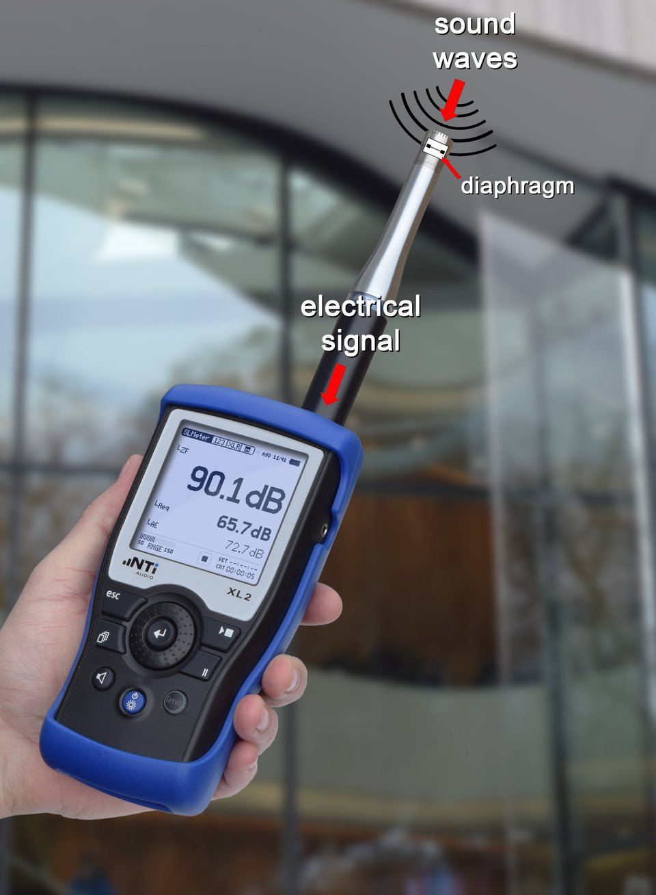
A handheld sound level meter, labelled with the microphone diaphragm and electrical signal.Image: Acousticator, Wikimedia Commons, CC BY-SA 4.0
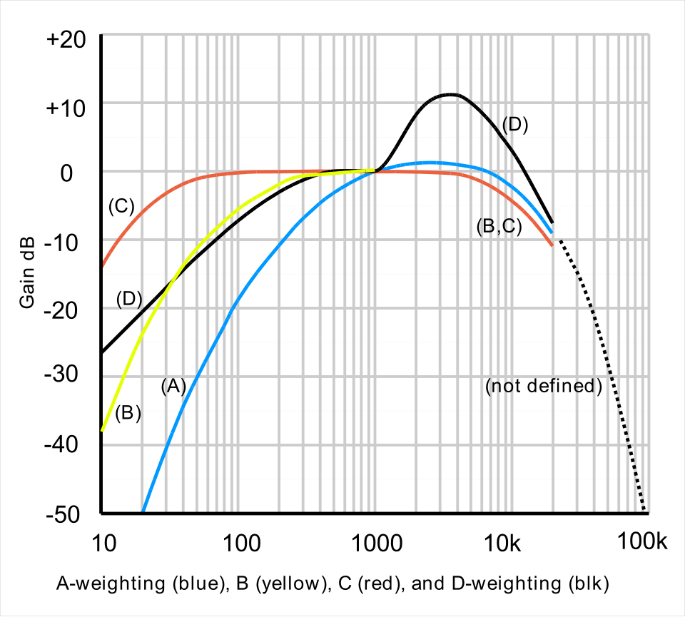
Frequency weighting curves A, B, C and D.Image: Lindosland (English Wikipedia), Wikimedia Commons, Public domain
Background and principle of operation
Sound pressure level
Sound pressure is the small fluctuation of air pressure around atmospheric pressure. The ear responds to pressures from about 20 µPa (threshold at mid frequencies) to more than 20 Pa (painful), a range of a million to one. A logarithmic scale compresses this range.
L_p = 20 log10(p_rms / p0) dB SPL
L_p = 10 log10(p_rms² / p0²)
where p_rms is the root-mean-square sound pressure in Pa and p0 = 20 µPa is the reference pressure.
Worked example: 1 Pa gives 20 log10(1 / 0.00002) = 20 log10(50 000) = 93.98 dB, which is why calibrators use 94 dB SPL. 10 Pa gives 113.98 dB, the 114 dB calibrator level. Doubling the pressure adds 6.02 dB; doubling the power (two equal incoherent sources) adds 3.01 dB.
L_total = 10 log10( Σ 10^(L_i / 10) )
where L_i are the levels of incoherent sources (or frequency bands) combined into a total level.
Worked example: two machines at 65 dB and one at 70 dB together give 10 log10(106.5 + 106.5 + 107) = 72.1 dB, not 200 dB.
Frequency weighting
Human sensitivity is poor at low and very high frequencies, especially at low levels. Frequency weightings are standardised filters that shape the measured spectrum before the level is computed:
A-weighting is loosely based on the 40-phon equal-loudness contour. It strongly attenuates low frequencies (about −19 dB at 100 Hz, −39 dB at 31.5 Hz) and slightly boosts 2 to 4 kHz. It is used for almost all environmental, occupational and room noise limits, including hearing damage risk, because it correlates reasonably with annoyance and hearing risk for common noises.
C-weighting is nearly flat from about 31.5 Hz to 8 kHz, rolling off only at the extremes. It is used for peak levels (LCpeak) in occupational noise, for assessing low-frequency content (a large difference between C- and A-weighted levels shows strong low-frequency energy), and for hearing protector selection methods.
Z-weighting (zero) is flat within the instrument's range, typically at least 10 Hz to 20 kHz. It replaces the older, vaguely defined "linear" or "flat" setting, and is used when a spectrum is analysed in octave or third-octave bands.
R_A(f) = 12194² f⁴ / [ (f² + 20.6²)
× √((f² + 107.7²)(f² + 737.9²)) (f² + 12194²) ]
A(f) = 20 log10 R_A(f) + 2.00 dB
R_C(f) = 12194² f² / [ (f² + 20.6²)(f² + 12194²) ]
C(f) = 20 log10 R_C(f) + 0.06 dB
where f is frequency in Hz; the constants 20.6, 107.7, 737.9 and 12194 Hz are the pole frequencies of the weighting networks, and +2.00 dB and +0.06 dB normalise the curves to 0 dB at 1 kHz.
Worked example: at 1 kHz, A = 0.00 dB and C = 0.00 dB by construction. At 100 Hz the formulas give A = −19.1 dB and C = −0.3 dB. A 100 Hz hum at 70 dB SPL therefore reads about 51 dB(A) but about 70 dB(C). Tables in IEC 61672-1 list rounded values at nominal frequencies (for example −16.1 dB(A) at 125 Hz, which is the value at the exact base-ten mid-band frequency 125.9 Hz; the formula at exactly 125 Hz gives −16.2 dB).
Try it: A, C and Z weighting curves
Move the frequency cursor to read the weighting at any frequency. Note how A-weighting discounts low frequencies while C stays nearly flat.
Frequency
A-weighting
C-weighting
Z-weighting
A for a 70 dB tone
ACZCursor
Time weighting and integration
Real sounds fluctuate. The meter squares the weighted pressure and averages it. There are two families of averaging:
Exponential time weighting: a running average in which recent sound counts most, with time constant τ. Fast (F) uses τ = 125 ms, which follows speech-like fluctuations. Slow (S) uses τ = 1 s, which gives a steadier reading for fluctuating noise. Impulse (I) uses a 35 ms rise and a slow (about 1.5 s) decay so that short events are held on the display; it is not recommended for hearing risk assessment and is optional in the current standard. Readings are written with the weightings as subscripts, for example LAF (A-weighted, fast) and LCS.
Linear integration: every moment over a measurement period T has equal weight. This gives the equivalent continuous sound level Leq,T (LAeq,T when A-weighted): the steady level that would contain the same acoustic energy as the fluctuating sound over T. Integrating-averaging SLMs report it directly.
L_τ(t) = 10 log10[ (1/τ) ∫ p_w²(ξ) e^(−(t−ξ)/τ) dξ / p0² ]
L_eq,T = 10 log10[ (1/T) ∫ p_w²(t) dt / p0² ]
= 10 log10[ (1/T) Σ t_i 10^(L_i/10) ]
where p_w is the frequency-weighted sound pressure, τ the time constant (0.125 s for F, 1 s for S), T the total measurement time and t_i the durations of intervals with levels L_i.
Worked example: one hour at 70 dB(A) followed by one hour at 80 dB(A) gives LAeq,2h = 10 log10[(107 + 108) / 2] = 77.4 dB(A). The louder hour dominates: the arithmetic mean (75 dB) underestimates the energy average. For occupational exposure, the level is normalised to an 8-hour day: LEX,8h = LAeq,T + 10 log10(T / 8 h). Four hours at 90 dB(A) gives 90 + 10 log10(0.5) = 87.0 dB(A).
Other common metrics: Lmax and Lmin (highest and lowest time-weighted level during the measurement, for example LAFmax), Lpeak (highest instantaneous pressure, usually C-weighted, used for impulsive noise such as gunfire or hammering, and not the same as Lmax), the sound exposure level LAE (SEL, the energy of an event normalised to 1 s), and statistical levels LN (topic 4.7).
Architecture and signal flow
Figure 4.6a. Sound-level meter signal flow. After frequency weighting the signal is squared and either exponentially averaged (F, S) or linearly integrated (Leq); a separate path captures the peak instantaneous pressure. Most modern meters compute all of these at once from one digitised signal.
Microphone: a condenser (capacitor) microphone, commonly 1/2 inch, either externally polarised or prepolarised (electret). It has a flat, stable response and low self-noise. Free-field microphones are designed to be pointed at the source (0° incidence) and compensate for their own disturbance of the field; pressure microphones are for couplers; random-incidence microphones suit diffuse fields and are oriented at a grazing angle (commonly about 70 to 90°) to the source.
Preamplifier: a very high input impedance buffer, directly behind the microphone, that drives the cable and processing electronics.
Frequency weighting: A, C or Z filters (analogue or, today, digital), and in many meters octave or one-third-octave filter banks meeting IEC 61260-1.
Squaring and averaging: the RMS detector squares the signal and averages it with the chosen time weighting, or integrates linearly for Leq.
Peak detector: captures the maximum instantaneous absolute pressure without time averaging.
Logarithmic conversion and display: converts to dB, stores Lmax, Lmin, Leq, percentiles and time histories, and may record audio for later identification of sources.
Wrong time weighting, Leq reset forgotten, overload
Range control
Sets measurement range (fixed or automatic)
Under-range or overload indicators ignored
Acoustic calibrator
Known reference level (IEC 60942)
Out of calibration itself, poor fit on microphone, wrong adaptor size
Battery and clock
Power and timestamps
Low battery changes readings in some meters; wrong clock time in logs
Key parameters and specifications
Parameter
Typical value or range
Meaning
Performance class
Class 1 (precision) or Class 2 (general purpose)
Class 1 has tighter tolerances and a wider frequency range; use it for audiometer calibration, audiometric rooms and legal work
Measurement range
typically about 20 to 30 dB(A) up to 130 to 140 dB
Low end limited by microphone self-noise; matters for audiometric rooms
Frequency range
about 10 Hz to 20 kHz (Class 1)
Covers the audiometric range
Time weightings
F 125 ms, S 1 s, I 35 ms rise (optional)
Choice changes Lmax readings for fluctuating sounds
Calibrator level
94 dB (1 Pa) or 114 dB (10 Pa) at 1 kHz; some also 250 Hz
Field check of the whole measurement chain
Acceptable calibration change
commonly a few tenths of a dB between pre- and post-check (often 0.5 dB as a working limit)
Larger drift invalidates the measurement
Laboratory verification
periodic tests typically every 1 to 2 years (IEC 61672-3)
Traceability of the meter and calibrator
Algorithms and equations: combining bands and correcting for background
Worked example (A-weighted level from octave bands): octave band levels of 70, 68, 65, 62, 58 and 55 dB at 125, 250, 500, 1000, 2000 and 4000 Hz, with A-weighting corrections of −16.1, −8.6, −3.2, 0, +1.2 and +1.0 dB, give weighted band levels of 53.9, 59.4, 61.8, 62.0, 59.2 and 56.0 dB. Adding them on an energy basis gives 67.4 dB(A), while the unweighted total is 73.4 dB. The 6 dB difference shows the noise has much of its energy at low frequencies.
import numpy as np
bands = np.array([125, 250, 500, 1000, 2000, 4000])
L_band = np.array([70, 68, 65, 62, 58, 55]) # dB SPL per octave band
A_corr = np.array([-16.1, -8.6, -3.2, 0.0, 1.2, 1.0]) # A-weighting, dB
LA = 10 * np.log10(np.sum(10 ** ((L_band + A_corr) / 10)))
LZ = 10 * np.log10(np.sum(10 ** (L_band / 10)))
print('Unweighted total:', round(LZ, 1), 'dB')
print('A-weighted total:', round(LA, 1), 'dB(A)')
levels = np.array([70, 80]) # two one-hour periods
print('Leq over 2 h:', round(10 * np.log10(np.mean(10 ** (levels / 10))), 1), 'dB')
Unweighted total: 73.4 dB
A-weighted total: 67.4 dB(A)
Leq over 2 h: 77.4 dB
L_source = 10 log10( 10^(L_total/10) − 10^(L_bg/10) )
where L_total is the level with the source operating and L_bg the background level with the source off.
Worked example: a machine plus background reads 70 dB and the background alone reads 64 dB. The machine alone is 10 log10(107 − 106.4) = 68.7 dB. A common rule: if the difference is 10 dB or more, no correction is needed; between about 3 and 10 dB, correct; below about 3 dB, the source level cannot be determined reliably.
Measurement practice
Calibrate with the acoustic calibrator before and after each session; record both readings.
Select the weighting and time weighting required by the standard or regulation you are comparing with, and write them in the result (for example LAeq,15min = 42.3 dB).
Mount the meter on a tripod where possible. If hand-held, hold it at arm's length with the body to the side, because the operator's body reflects sound and can change readings by a decibel or more.
Orient the microphone according to its type (free-field: towards the source; random-incidence: as specified by the manufacturer).
Keep away from reflecting surfaces unless the measurement position is defined relative to them; indoors, commonly at least about 1 m from walls and at ear height of the listener (about 1.2 m seated, 1.5 m standing).
Use a windscreen outdoors and avoid measuring in rain or strong wind.
Watch overload and under-range indicators; a reading made during overload is invalid.
Record the time, duration, positions, conditions and sources heard.
Common errorReporting "the noise was 65 dB" without the weighting, time weighting and duration is incomplete. LAFmax = 65 dB and LAeq,1h = 65 dB describe very different situations.
Clinical applications
Audiometer calibration: a Class 1 SLM with a coupler or ear simulator and octave filters measures earphone output (topic 4.1).
Sound field calibration: speech and warble tone levels at the listener position for aided testing and speech-in-noise tests.
Test room noise: octave or one-third-octave band levels compared with maximum permissible ambient noise levels (topic 4.7).
Classroom and clinic noise: LAeq for background noise, and speech levels to estimate signal-to-noise ratio.
Noise exposure counselling: measuring levels at workplaces, music venues or from personal devices; C-weighted peak for impulsive sources.
Hearing aid and real-ear work: verifying the level of test signals in the sound field before measurement.
Limitations, errors and troubleshooting
Problem
Cause
What to check or do
Calibrator reading off by more than about 0.5 dB
Poor seal on microphone, wrong adaptor, calibrator or meter drift
Refit, check adaptor; if it persists, send both for laboratory verification
Very low levels cannot be measured
Microphone self-noise above the room noise
Use a low-noise microphone and band analysis; report "below measurement floor"
Readings jump outdoors
Wind noise
Use a windscreen; avoid measuring in strong wind
Different readings from two operators
Body reflections, orientation, position
Use a tripod and a written procedure
LAFmax much higher than LAeq
Fluctuating or intermittent noise (normal)
Report both; use statistical levels to describe variation
Low-frequency problem not visible in dB(A)
A-weighting discounts low frequencies
Compare dB(C) with dB(A) or analyse octave bands
Smartphone readings disagree with SLM
Uncalibrated microphone and processing
Use phone apps only for awareness, not for compliance or calibration
Demonstration
Equipment: Class 1 or Class 2 SLM with A, C, Z weightings, F and S time weightings and Leq; acoustic calibrator; tripod; a loudspeaker with a signal generator (or a laptop) able to play a low-frequency tone, pink noise and speech; the u4-weighting browser demo.
Show the microphone, preamplifier and controls; explain Class 1 and Class 2 labels on the meter.
Fit the calibrator, switch it on and adjust or check the reading (94 or 114 dB SPL). Record it.
Play a 100 Hz tone. Read it with Z, C and A weighting; students compare the difference with the demo cursor at 100 Hz (about 19 dB between A and Z).
Play a 1 kHz tone at the same level and repeat: all three weightings should agree.
Play speech or intermittent music; compare LAF and LAS readings and the LAFmax. Students note that S reads steadier and lower maxima.
Run a 1-minute LAeq on the same material and compare with the fluctuating readings.
Measure the ambient noise of the room with the loudspeaker off; demonstrate the background correction rule.
Repeat the calibrator check at the end and record any drift.
Current developments
Fully digital meters with simultaneous broadband, octave and third-octave analysis, time histories and audio recording for source identification.
Networked noise monitoring terminals for continuous environmental and occupational monitoring with remote data access.
Personal noise dosimeters, including in-ear dosimetry that measures under hearing protectors.
Calibrated external microphones for smartphones and tablets, and research on the accuracy of apps; useful for screening and awareness but distinct from certified meters.
Growing attention to low-frequency noise and infrasound metrics beyond A-weighting.
Practical activity and assessment
Task (Practical P10): record the same source under two weighting and time settings and explain the difference.
Calibrate the SLM and record the calibrator reading.
Choose a source with low-frequency content (for example an air conditioner or a fan) and one with fluctuating content (speech or traffic through a window).
For each, record LAeq and LCeq over 1 minute, and LAFmax and LASmax.
Explain the LC − LA difference in terms of the weighting curves, and the F versus S maximum difference in terms of time constants.
Repeat the calibrator check and report the drift.
Deliverable: a results table with all settings stated, and a half-page explanation.
References
IEC 61672-1, Electroacoustics: Sound level meters, Part 1: Specifications (with Parts 2 and 3 on pattern evaluation and periodic tests).
IEC 60942, Electroacoustics: Sound calibrators.
IEC 61260-1, Electroacoustics: Octave-band and fractional-octave-band filters, Part 1: Specifications.
Harris, C. M. (ed.) Handbook of Acoustical Measurements and Noise Control. Acoustical Society of America.
Everest, F. A. and Pohlmann, K. C. Master Handbook of Acoustics. McGraw-Hill.
Speaks, C. E. Introduction to Sound: Acoustics for the Hearing and Speech Sciences. Plural Publishing.
Sound-level meter operating manual for the departmental instrument.
World Health Organization, resources on safe listening and noise: https://www.who.int
4.7
Noise auditing: traffic, ambient noise and audiometric rooms/classrooms
1 hour27.11.2026Practical P10
A noise audit is a planned set of sound level measurements that describes the noise at a place and compares it with a criterion. Audiologists audit audiometric test rooms (is the room quiet enough to measure thresholds down to 0 dB HL?), classrooms (can children hear the teacher?), clinics and the wider environment (traffic, building services). The value of an audit depends on planning, correct metrics, documentation and repeatability as much as on the meter.
What it is
A systematic survey using a calibrated sound-level meter: defined purpose and criteria, chosen measurement positions and times, appropriate metrics (Leq, Lmax, percentile levels, octave or third-octave band levels), recording of conditions, and a report with conclusions and recommendations.
Why it is required
Ambient noise raises measured thresholds in a test room (a masking effect that makes hearing appear worse than it is) and degrades speech understanding in classrooms, particularly for children and people with hearing loss. Environmental noise affects health and wellbeing. Decisions on treatment, relocation or policy need objective data.
How it works
The auditor identifies sources and receivers, measures at representative positions and periods, computes descriptive statistics, compares them against standards or guidelines, and identifies which sources and transmission paths to control.
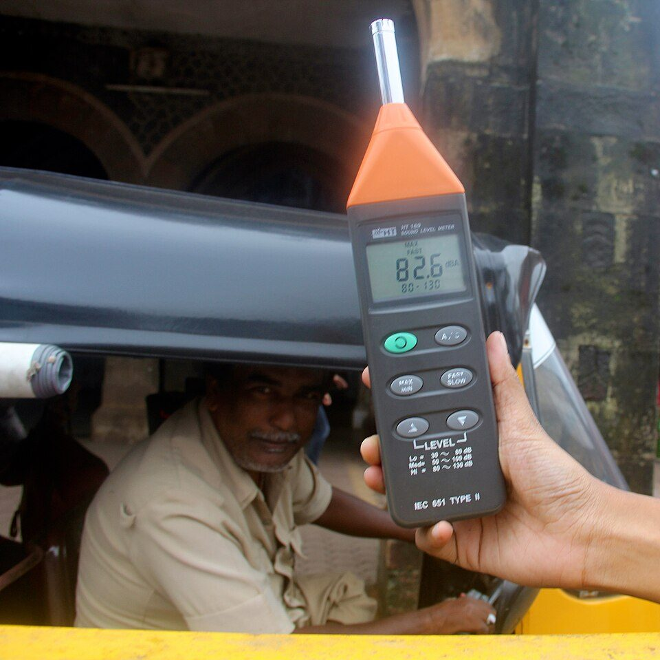
Measuring traffic noise with a sound level meter in Mumbai.Image: Sumaira Abdulali, Wikimedia Commons, CC BY-SA 3.0A strategic noise map: colour bands show modelled noise levels around roads and railways.Image: Lerat77, Wikimedia Commons, CC BY-SA 3.0A road noise barrier, one of the mitigations a noise audit may recommend.Image: DeFacto, Wikimedia Commons, CC BY-SA 4.0
Background and principle of operation
Source, path and receiver
Every noise problem has three parts: the source (traffic, ventilation, generator, people), the path (air, walls, doors, ducts, floors) and the receiver (the patient in the booth, the child in the classroom). Noise reaches a room through airborne paths (gaps around doors, windows, ventilation ducts, thin walls) and structure-borne paths (vibration from pumps, lifts, footsteps and traffic carried through the building structure and re-radiated as sound). Control is most effective at the source, then along the path, and last at the receiver.
Figure 4.7a. Source, path and receiver model. An audit identifies which source and which path dominate the ambient level at the receiver, then compares that level with the criterion for the task.
Metrics for fluctuating noise
LAeq,T: equivalent continuous A-weighted level over period T (topic 4.6). The main descriptor for most environmental and room noise.
LAFmax: the highest fast-weighted level, which captures intermittent events such as horns or door slams.
Percentile (statistical) levels LN: the level exceeded for N % of the measurement time. L10 describes the frequent peaks (in traffic, the passing vehicles); L50 the median; L90 the background level, the quiet floor between events. L90 is often used for the background noise of a room or neighbourhood.
Band levels: octave or one-third-octave band Leq, needed to compare with maximum permissible ambient noise levels for audiometric rooms and to diagnose sources (fans produce low-frequency tones, speech leaks at mid frequencies).
Day, evening and night levels: environmental assessments use separate periods (for example Lday, Lnight, or the combined Lden with penalties for evening and night).
TNI = 4 (L10 − L90) + L90 − 30 dB
where TNI is the traffic noise index, a historical descriptor that adds weight to the fluctuation of traffic noise, L10 and L90 are A-weighted percentile levels over the period.
Worked example: a roadside survey gives L10 = 75 dB(A) and L90 = 60 dB(A). TNI = 4 × 15 + 60 − 30 = 90. The large L10 − L90 spread shows intermittent, disturbing traffic peaks over a moderate background. Current practice relies mainly on LAeq and Lden, but percentile levels remain useful to describe fluctuation.
Distance from traffic
point source: L2 = L1 − 20 log10(r2 / r1) (−6 dB per doubling)
line source: L2 = L1 − 10 log10(r2 / r1) (−3 dB per doubling)
where L1 is the level at distance r1 and L2 the level at distance r2, in free-field conditions without barriers or ground effects.
Worked example: a busy road behaves approximately as a line source. If LAeq is 72 dB(A) at 10 m, it is about 72 − 10 log10(4) = 66 dB(A) at 40 m. A single idling generator (a point source) at 70 dB(A) at 5 m falls to about 70 − 20 log10(4) = 58 dB(A) at 20 m. Buildings, barriers and ground absorption change these values, so they are estimates for planning, not substitutes for measurement.
Architecture and signal flow of an audit
Figure 4.7b. Noise audit workflow. Analysis can send the auditor back to planning when data are missing or unrepresentative.
Purpose and criteria: state the question. "Can air- and bone-conduction thresholds down to 0 dB HL be measured in booth 2 from 125 to 8000 Hz?" needs band levels compared with maximum permissible ambient noise levels. "Is classroom 3B acceptable for a child with a cochlear implant?" needs LAeq (unoccupied and occupied), speech levels and reverberation time.
Plan: select positions (the listener's head position with the listener absent; a grid across a classroom; roadside and façade points outdoors), times (normal operating hours, worst case such as peak traffic or with air conditioning running), durations (long enough for a stable Leq: often 30 s to a few minutes per band indoors, 15 minutes to 24 hours outdoors), and the number of repeats.
Calibrate: calibrator check before and after, and note the meter's class and the last laboratory verification.
Measure: LAeq, LAFmax and percentile levels; band levels where the criterion is spectral. Note the microphone orientation and height.
Document: sketch or photograph positions, record weather (outdoors), sources heard, equipment running, doors and windows open or closed, occupancy.
Analyse: compute means and ranges over repeats, apply background corrections where relevant, compare with criteria, identify dominant sources and frequency bands.
Report: concise findings with tables and a map, and practical recommendations.
Components (audit toolkit)
Item
Purpose
What can go wrong
Class 1 SLM with octave and third-octave bands
Band levels for audiometric rooms; low noise floor
Microphone self-noise above the room level at high frequencies
Acoustic calibrator
Field check
Forgotten post-check; calibrator itself out of date
Tripod and extension cable
Stable, operator-free positioning
Operator near the microphone adds noise and reflections
Windscreen
Outdoor measurement
Wind noise without it
Floor plan, tape measure, camera
Documenting positions
Positions cannot be repeated later
Data logging and software
Time histories, percentiles, maps
Clock not set, files not labelled
Standards and guidelines
Criteria
Outdated edition, wrong transducer column for the booth
Key parameters and criteria
Setting
Metric
Criterion source (check current edition)
Audiometric test room
Octave or third-octave band Leq at the listener position
Maximum permissible ambient noise levels in ANSI S3.1 and ISO 8253-1, which differ for ears covered (supra-aural or insert earphones) and ears not covered (bone conduction, sound field) and with the test frequency range
Classroom (unoccupied)
LAeq of background noise
Commonly recommended at or below about 35 dB(A) for core learning spaces (for example ANSI/ASA S12.60)
Classroom (teaching)
Speech-to-noise ratio at the child's position
Commonly recommended at least about +15 dB for children with hearing loss
Classroom
Reverberation time (topic 4.8)
Commonly recommended short, around 0.4 to 0.6 s for typical classrooms; check current standards
Community noise (India)
LAeq day and night by zone
Noise Pollution (Regulation and Control) Rules, 2000: industrial, commercial, residential and silence zones, with night limits lower than day limits; check the current notified values
Environmental health guidance
Lden, Lnight for road traffic and other sources
WHO environmental noise guidelines
How a maximum permissible ambient noise level is derived
The MPANL for a test frequency is the ambient noise band level that would just begin to raise a 0 dB HL threshold, based on how much noise in the bands around a tone is needed to mask it. For ears-not-covered testing (bone conduction and sound field), the ambient noise reaches the ear directly, so the limits are the lowest. With earphones, the earphone's own attenuation of outside sound protects the test ear, so the permissible band level is higher by roughly the attenuation of that earphone at that frequency. Insert earphones attenuate more than supra-aural earphones, especially at low frequencies, so they tolerate noisier rooms.
MPANL(ears covered, f) ≈ MPANL(ears not covered, f) + attenuation(f)
excess(f) = L_measured(f) − MPANL(f)
where attenuation(f) is the earphone's attenuation of ambient sound in that band; a positive excess means thresholds near 0 dB HL cannot be confirmed at that frequency.
Worked example (illustrative figures only): if the ears-not-covered limit in the 250 Hz band were L0 dB and the measured band level were L0 + 8 dB, bone-conduction thresholds at 250 Hz could be elevated by ambient noise when they are below roughly 8 to 10 dB HL. The same room might pass for insert earphones if their attenuation at 250 Hz exceeded 8 dB. Always read the actual MPANL values from the standard used for the room.
Clinical linkLow-frequency noise from air conditioning and traffic is the usual reason test rooms fail, and it causes falsely elevated low-frequency thresholds, particularly for bone conduction. A pattern of "mild low-frequency loss" in many patients tested in one room should prompt a room noise audit.
Classroom acoustics
Speech understanding in a classroom depends on the signal-to-noise ratio (SNR) at the child's ear, reverberation time and the distance from the talker. Children need a better SNR than adults to understand speech because their language knowledge, auditory processing and ability to fill in missing information are still developing. Children with hearing loss, auditory processing difficulties, a non-native language of instruction or attention difficulties are affected most.
SNR = L_speech − L_noise (dB, at the listener position)
where L_speech is the teacher's speech level and L_noise the noise level, both LAeq at the child's position.
Worked example: a teacher's voice measured at the front row is 66 dB(A); at the back row, 8 m away, it is about 60 dB(A) (the direct sound falls with distance; beyond the critical distance the reverberant field keeps the level from falling further). With occupied classroom noise of 55 dB(A), the SNR is +11 dB at the front and +5 dB at the back, both below a +15 dB target. Remedies include acoustic treatment (lower noise and reverberation), seating near the teacher, and remote microphone systems that deliver the teacher's voice directly to the hearing aid or cochlear implant, which can raise the effective SNR by a large amount.
Clinical applications
Commissioning and periodic checking of audiometric booths and test rooms; after new air conditioning or building works nearby.
Choosing transducers when a room cannot meet ears-not-covered limits (insert earphones, noting that bone conduction remains limited).
Classroom assessments for children with hearing aids or cochlear implants, supporting recommendations for remote microphone systems and acoustic treatment.
Occupational and community noise assessments as part of hearing conservation and public health work.
Tele-audiology and outreach sites: documenting ambient noise where no booth is available.
Limitations, errors and troubleshooting
Problem
Cause
What to check or do
Room appears to pass but thresholds still elevated
Measured at a quiet time; noise sources switched off during audit
Measure under normal operating conditions, including worst case
Band levels at high frequencies read the same everywhere
Meter noise floor reached
Check the meter's self-noise in each band; report as "below measurement floor"
Results not repeatable
Different positions, orientation, occupancy
Mark positions on a plan, fix the procedure, repeat on several days
Outdoor data dominated by one event
Horn, aircraft, construction
Report Leq with and without the event; use percentiles
Classroom SNR poor despite low unoccupied noise
Occupied noise from students, high reverberation
Measure occupied conditions and RT; consider treatment and remote microphones
Conflicting criteria
Different standards or editions
State which criterion was used and why
Demonstration
Equipment: Class 1 SLM with octave or third-octave bands, calibrator, tripod, floor plans of the department, and a copy of the MPANL table from the standard used by the clinic.
State the purpose: check whether the test booth is suitable for ears-covered and ears-not-covered testing, and survey noise around the department.
Calibrate the meter. Place it on a tripod at the patient's head position inside the booth with the door closed and ventilation running as in normal use.
Measure one-third-octave or octave band Leq (for example 30 s per measurement) and LAeq. Enter the results beside the MPANL table and mark bands that exceed the limit.
Repeat with the booth ventilation off and with the corridor busy to show which conditions matter.
Outside the booth, measure LAeq, LAFmax, L10 and L90 at several points along a corridor, in a classroom and at the roadside boundary. Mark each on the floor plan.
Colour the plan by LAeq to create a simple noise map; discuss dominant sources at each point.
Repeat the calibrator check and discuss uncertainty and repeatability.
Current developments
Continuous, networked noise monitoring in hospitals, schools and cities with online dashboards.
Noise mapping software that combines traffic models and measurements to produce city-scale maps.
Boothless audiometry using high-attenuation earphones with real-time ambient noise monitoring and automatic flagging of noisy presentations.
Increasing attention to classroom acoustics in building codes and to inclusive design for learners with hearing loss.
Low-cost sensor networks for community noise, which require calibration and validation against Class 1 instruments.
Practical activity and assessment
Task (Practical P10): prepare a short noise-audit report with measurements and recommendations.
Choose three to five locations: the audiometric booth, a classroom, a waiting area, a corridor and one outdoor point near traffic.
Write the purpose and criterion for each location before measuring.
Measure LAeq (at least 5 minutes outdoors, 1 minute indoors), LAFmax, L10 and L90, and octave bands in the booth. Repeat at a second time of day.
Draw a noise map on the floor plan.
Write a two-page report: purpose, equipment and calibration, method, results table, map, comparison with criteria, sources identified, recommendations (for example door seals, relocating equipment, remote microphones for a named classroom).
References
ANSI S3.1, Maximum Permissible Ambient Noise Levels for Audiometric Test Rooms.
ISO 8253-1, Acoustics: Audiometric test methods, Part 1: Pure-tone air and bone conduction audiometry.
ANSI/ASA S12.60, Acoustical Performance Criteria, Design Requirements, and Guidelines for Schools, Part 1: Permanent Schools.
ISO 1996-1 and ISO 1996-2, Acoustics: Description, measurement and assessment of environmental noise.
IEC 61672-1, Electroacoustics: Sound level meters, Part 1: Specifications.
Crandell, C. C. and Smaldino, J. J. (2000). Classroom acoustics for children with normal hearing and with hearing impairment. Language, Speech, and Hearing Services in Schools, 31, 362 to 370.
Harris, C. M. (ed.) Handbook of Acoustical Measurements and Noise Control. Acoustical Society of America.
World Health Organization, Environmental Noise Guidelines for the European Region: https://www.who.int
American Speech-Language-Hearing Association, resources on classroom acoustics: https://www.asha.org
4.8
Measurement of reverberation time
1 hour03.12.2026Practical P11
Reverberation is the persistence of sound in a room after the source stops, produced by many reflections from walls, floor, ceiling and furnishings. Reverberation time (RT60) is the single most used measure of room acoustics. It governs how speech sounds in classrooms, clinics and homes, and it matters most for children and for people using hearing aids or cochlear implants, for whom long reverberation can make speech unintelligible even when it is loud enough.
What it is
RT60 is the time taken for the sound energy in a room to decay by 60 dB after the source stops. It is measured in octave or one-third-octave bands with a loudspeaker, a microphone and an analyser, or predicted from room volume and absorption with the Sabine or Eyring formulas.
Why it is required
Late reflections fill the gaps between speech sounds and mask the following sounds (overlap masking), smearing the temporal envelope that listeners rely on. Rooms for teaching, testing and rehabilitation need short, controlled reverberation, and treatment decisions need measured values.
How it works
A room is excited with noise that is suddenly stopped, or with an impulse or sweep from which the impulse response is derived. The decay of level with time is plotted in each frequency band, a straight line is fitted over a defined part of the decay (for example from −5 to −25 dB) and extrapolated to a 60 dB decay.
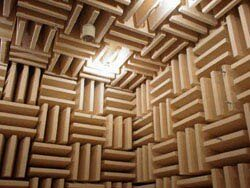
An anechoic chamber: wedge absorbers remove almost all reflections, so reverberation time is close to zero.Image: Tlotoxl (English Wikipedia), Wikimedia Commons, CC BY-SA 3.0
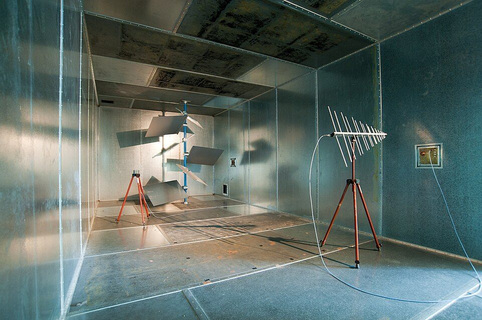
A reverberation chamber: hard, non-parallel surfaces give a long, diffuse decay.Image: Manuamador, Wikimedia Commons, CC BY-SA 3.0
When sound meets a surface, part of its energy is reflected, part is absorbed (converted to heat in porous materials or in vibrating panels) and part is transmitted through. The absorption coefficient α is the fraction of incident energy not reflected, from 0 (perfect reflector) to 1 (perfect absorber, like an open window). It depends strongly on frequency: porous absorbers (mineral wool, acoustic ceiling tiles, heavy curtains, carpet) absorb mid and high frequencies well but low frequencies poorly unless they are thick or spaced from the wall; panel absorbers work at low frequencies. Diffusion scatters reflections in many directions, making the sound field more uniform.
At a listener, sound arrives first by the direct path, then as early reflections (within roughly the first 50 ms, which the auditory system integrates with the direct sound and which can help speech), and then as dense late reverberation, which is heard as a decaying tail and harms intelligibility. Close to the source the direct sound dominates; far from it the reverberant field dominates. The distance at which the two are equal is the critical distance.
Sound decay and RT60
Once a steady source stops, each reflection loses a fraction of its energy, so the energy density decays exponentially and the level in decibels falls along a straight line. RT60 (also written T60 or simply T) is the time for a 60 dB fall. A room with RT60 = 0.6 s loses 100 dB per second.
Sabine: T = 0.161 V / A
A = Σ S_i α_i = S α_mean (m² metric sabins)
Eyring: T = 0.161 V / ( −S ln(1 − α_mean) )
where T is the reverberation time in s, V the room volume in m³, S_i the area of each surface in m² with absorption coefficient α_i, S the total surface area, α_mean the area-weighted mean absorption coefficient, and 0.161 s/m a constant that depends on the speed of sound (about 343 m/s at 20 °C). In large rooms an air absorption term 4mV is added to A at high frequencies.
Sabine's formula works well for fairly reverberant rooms with mean absorption below about 0.2 to 0.3. As absorption increases, it overestimates T (with α = 1 it still predicts a finite reverberation time), and Eyring's formula is more accurate. Both assume a diffuse sound field with absorption spread evenly, which is rarely exactly true in real rooms (for example a classroom with all absorption on the ceiling).
Worked example: a classroom 9 m × 7 m × 3 m has V = 189 m³ and S = 2 (9 × 7 + 9 × 3 + 7 × 3) = 2 (63 + 27 + 21) = 222 m². With a mean absorption coefficient of 0.20 at 1 kHz, A = 222 × 0.20 = 44.4 m², and Sabine gives T = 0.161 × 189 / 44.4 = 0.69 s. Eyring gives T = 30.4 / (222 × 0.223) = 0.61 s. If the 63 m² ceiling is changed from a surface with α = 0.20 to acoustic tiles with α = 0.60, A increases by 63 × 0.40 = 25.2 m² to 69.6 m², and the Sabine RT falls to 0.161 × 189 / 69.6 = 0.44 s.
r_c ≈ 0.057 √( Q V / T ) m
where r_c is the critical distance, Q the directivity factor of the source (about 2 for a talker facing the listener, 1 for an omnidirectional source), V the volume in m³ and T the reverberation time in s.
Worked example: in the untreated classroom above (T = 0.69 s), with Q = 2, r_c = 0.057 √(2 × 189 / 0.685) = 1.34 m. Most children sit well beyond this distance from the teacher, so they listen mainly to reverberant sound. After treatment (T = 0.44 s) r_c rises to about 1.7 m.
Frequency dependence
Because absorption varies with frequency, RT is reported per octave band, commonly 125 to 4000 Hz. Rooms treated only with thin porous materials often have much longer RT at 125 and 250 Hz than at 1 to 4 kHz, which gives a boomy sound and lets low-frequency noise build up. Criteria are usually stated for the mid-frequency average (for example the mean of 500, 1000 and 2000 Hz) or for each band.
Architecture and signal flow of a measurement
Figure 4.8a. Reverberation time measurement chain. The analyser separates the decay into frequency bands, the decay curve is smoothed by ensemble averaging or backward integration, and a straight line fitted over a defined range gives T20 or T30.
Signal source: broadband (pink or white) noise for the interrupted noise method; an exponential sine sweep or maximum-length sequence for the integrated impulse response method; or an impulsive source (balloon burst, starter pistol, wooden clapper) for simple surveys.
Power amplifier and omnidirectional loudspeaker: a dodecahedron loudspeaker radiates nearly equally in all directions so that the room is excited uniformly. The level must be high enough to produce a decay well above background noise.
Room: doors and windows in the normal condition; furniture present; occupancy stated (occupied rooms have more absorption than empty ones).
Microphone: omnidirectional measurement microphone at listener height, at several positions away from walls and from the source.
Analyser: SLM or computer software with octave or third-octave filters and fast level sampling (many level samples per second), or recording of the raw signal for later processing.
Decay processing: averaging several interrupted-noise decays (ensemble averaging) or backward integration of the impulse response (Schroeder method) to obtain a smooth decay curve.
Line fit and extrapolation: least-squares fit over the evaluation range and conversion to a 60 dB decay time.
Components
Component
Function
What can go wrong
Noise or sweep generator
Excites all frequency bands
Too little energy in low bands (use pink noise or a longer sweep)
Loudspeaker
Room excitation
Directional speaker excites the room unevenly; distortion at high level
Impulsive source
Quick excitation
Poor repeatability, weak low frequencies, hearing hazard at close range
Microphone and SLM
Records decay
Background noise limits dynamic range; overload at onset
Octave filters
Band separation
Filter ringing biases very short RTs in low bands
Software
Integration, fitting
Wrong evaluation range, integration including the noise floor
Key parameters and specifications
Parameter
Typical value or range
Meaning
T20
slope from −5 to −25 dB, × 3
Needs about 35 dB of decay above background
T30
slope from −5 to −35 dB, × 2
Needs about 45 dB above background; less sensitive to fluctuations
EDT (early decay time)
slope from 0 to −10 dB, × 6
Closer to perceived reverberance
Frequency bands
octaves 125 to 4000 Hz (63 and 8000 Hz optional)
RT is frequency dependent
Positions
at least 2 source and several microphone positions, depending on the grade
Averages spatial variation
Classrooms
commonly recommended around 0.4 to 0.6 s (mid-frequency, unoccupied)
Supports speech intelligibility; check current standards
Typical untreated rooms with hard surfaces
often 1 s or more
Poor for speech and for hearing aid users
Audiometric booths
very short (heavily absorbent interiors)
Sound field test conditions approach free field
Algorithms and equations: measurement methods
Interrupted noise method
A loudspeaker plays broadband noise until the room reaches a steady level, then the noise is switched off and the level decay is recorded in each band. Because noise is random, each decay is jagged; several decays (for example 3 or more per position) are averaged. This is the classic method in ISO 3382-2 and can be done with many sound-level meters that have a reverberation function.
Integrated impulse response method
The room impulse response h(t) is obtained directly (an impulsive source) or, better, by playing a sweep or maximum-length sequence and deconvolving the recording. Schroeder showed that integrating the squared impulse response backwards in time gives a smooth decay curve equal to the average of infinitely many interrupted-noise decays.
E(t) = ∫ from t to ∞ of h²(τ) dτ
L(t) = 10 log10( E(t) / E(0) ) dB
T20 = 60 / (decay rate from −5 to −25 dB)
where h(t) is the band-filtered impulse response, E(t) the energy remaining after time t, and L(t) the backward-integrated decay curve. In practice the integration is truncated where the impulse response meets the background noise, with a correction for the missing tail.
Worked example (from a decay curve): the level passes −5 dB at 0.05 s and −25 dB at 0.25 s. The decay rate is 20 dB / 0.20 s = 100 dB/s, so T20 = 60 / 100 = 0.60 s. Equivalently, T20 = 3 × 0.20 s = 0.60 s. If the background noise were 30 dB below the starting level, the curve would flatten near −30 dB and T30 could not be evaluated; T20 would still be valid.
import numpy as np
fs, T60 = 8000, 0.6
t = np.arange(int(1.0 * fs)) / fs
rng = np.random.default_rng(1)
h = rng.standard_normal(t.size) * np.exp(-np.log(1000) * t / T60)
E = np.cumsum(h[::-1] ** 2)[::-1] # Schroeder backward integral
L = 10 * np.log10(E / E[0]) # decay curve in dB
i5, i25 = np.argmax(L <= -5), np.argmax(L <= -25)
slope = np.polyfit(t[i5:i25], L[i5:i25], 1)[0] # dB per second
print('Decay rate:', round(slope, 1), 'dB/s')
print('T20 estimate:', round(-60 / slope, 2), 's')
Decay rate: -103.6 dB/s
T20 estimate: 0.58 s
The simulated room was generated with T60 = 0.6 s; the estimate of 0.58 s differs slightly because the random noise makes every realisation of an impulse response a little different. This is why several positions and repetitions are averaged in real measurements.
Try it: Sabine reverberation calculator and decay curve
Set the room dimensions and the average absorption (or choose a typical preset). The plot shows an idealised measured decay that meets a background noise floor, the T20 evaluation range and the extrapolation to −60 dB.
Volume V
Total surface S
Absorption A
RT60 (Sabine)
RT60 (Eyring)
Critical distance (Q = 2)
Measured decay (with noise floor)T20 range and fitted line extrapolated−60 dB point
Key ideaReal measurements rarely achieve a clean 60 dB decay because background noise intervenes. T20 and T30 measure the slope over a range that lies well above the noise floor and extrapolate it: T20 multiplies the time for the 20 dB fall from −5 to −25 dB by 3, T30 multiplies the 30 dB fall from −5 to −35 dB by 2. Classrooms are commonly recommended to have short reverberation times, around 0.4 to 0.6 s; check the current national or international standard that applies.
Clinical applications
Speech intelligibility: long reverberation causes overlap masking (the tail of one phoneme masks the next) and self-masking (smearing within a phoneme, flattening formant transitions and the temporal envelope). Consonants, which are brief and weaker than vowels, suffer most. Reverberation combines with noise: a room with both moderate noise and moderate reverberation can be much worse than either alone.
Children: young children, particularly with hearing loss or language delay, need both a good SNR and short RT; classroom assessments include RT measurement (topic 4.7).
Hearing aid users: hearing aids amplify reverberation along with speech. Directional microphones and noise reduction lose effectiveness beyond the critical distance because the reverberant field arrives from all directions. Remote microphone systems avoid the room by picking up speech close to the talker's mouth.
Cochlear implant users: implant processing relies heavily on temporal envelope cues, which reverberation smears; many implant users are especially sensitive to reverberation.
Clinic design: sound field test rooms, speech testing rooms and counselling rooms need low RT for valid and comfortable testing.
Research and fitting: room impulse responses are used to create realistic reverberant test material for speech-in-noise tests and hearing aid evaluation.
Limitations, errors and troubleshooting
Problem
Cause
What to check or do
Decay curve bends and flattens
Background noise floor reached
Increase source level, use a sweep, evaluate T20 instead of T30, truncate integration properly
Double-slope (curved) decay
Coupled spaces or non-diffuse field (for example absorbent ceiling only)
Report EDT and T30 separately; describe the shape
Large spread between positions
Non-uniform absorption, source or microphone too close to surfaces
Use more positions and average; follow position rules in ISO 3382-2
Low-frequency RT unreliable
Few room modes, filter ringing, weak source
Longer measurements, more averages, check filter effects
Prediction and measurement disagree
Sabine assumptions, wrong α values, furniture and occupancy
Treat predictions as estimates; measure after treatment
Impulsive source gives varied results
Poorly repeatable balloon or clapper
Use several bursts, or change to sweep or noise methods
SafetyBalloon bursts, starter pistols and loud noise signals can exceed safe peak levels close to the source. Wear hearing protection, keep observers at a distance and warn occupants before measurements.
Demonstration
Equipment: an SLM with a reverberation function or a laptop with a measurement microphone and room-acoustics software (or Audacity for recording), a loudspeaker playing pink noise or a sweep, balloons, and a recorded room impulse response; the u4-rt60 demo.
Clap or burst a balloon in a hard room (a corridor or stairwell) and in a furnished room; students describe the difference in the sound tail.
Measure RT with the interrupted noise method at two microphone positions in a classroom. Show the decay in several octave bands.
Alternatively, record a balloon burst or a sweep response, display the waveform in Audacity (linear and dB view) and show the exponential envelope.
Apply backward integration to a recorded impulse response (or run the code cell) and fit T20.
Measure the room dimensions, list surface materials, and use the calculator with typical absorption values to predict RT. Compare with the measurement and discuss the differences.
Use the calculator to show how much absorbent ceiling area is needed to bring the classroom into the commonly recommended range.
Current developments
Swept-sine measurement with smartphone and laptop apps that provide reverberation time estimates; accuracy depends on the microphone and loudspeaker and should be checked against reference equipment.
Room acoustic simulation and auralisation, letting designers and clinicians listen to a room before it is built or treated.
Blind estimation of reverberation time from running speech, used in hearing aid scene classification and in dereverberation algorithms.
Dereverberation processing in hearing aids and cochlear implant processors, still an active research area.
Wider adoption of acoustic design standards for schools and healthcare buildings.
Practical activity and assessment
Task (Practical P11): calculate RT60 from a simple decay example and from a room survey.
From a supplied decay plot, read the times at which the level passes −5, −25 and −35 dB. Compute T20 and T30 and comment on any difference.
Measure the dimensions of a classroom and list the surfaces with areas and typical absorption coefficients at 500 and 1000 Hz from a textbook table.
Compute V, S, A and the Sabine and Eyring RTs at both frequencies.
If equipment is available, measure the RT and compare.
Propose a treatment (for example absorbent ceiling tiles, wall panels, carpets) and compute the new RT.
Deliverable: decay plot with the evaluation range marked, calculation sheet, and a recommendation for the classroom.
References
ISO 3382-1, Acoustics: Measurement of room acoustic parameters, Part 1: Performance spaces.
ISO 3382-2, Acoustics: Measurement of room acoustic parameters, Part 2: Reverberation time in ordinary rooms.
ISO 354, Acoustics: Measurement of sound absorption in a reverberation room.
Schroeder, M. R. (1965). New method of measuring reverberation time. Journal of the Acoustical Society of America, 37, 409 to 412.
Kuttruff, H. Room Acoustics. CRC Press.
Long, M. Architectural Acoustics. Academic Press.
Everest, F. A. and Pohlmann, K. C. Master Handbook of Acoustics. McGraw-Hill.
ANSI/ASA S12.60, Acoustical Performance Criteria, Design Requirements, and Guidelines for Schools, Part 1: Permanent Schools.
Photographs and figures are from Wikimedia Commons and are public domain or openly licensed. They are reproduced unchanged except for resizing and are credited below with author, source and licence, as each licence requires. Diagrams without a credit were drawn for these notes.